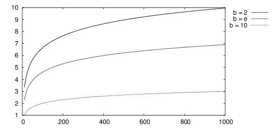
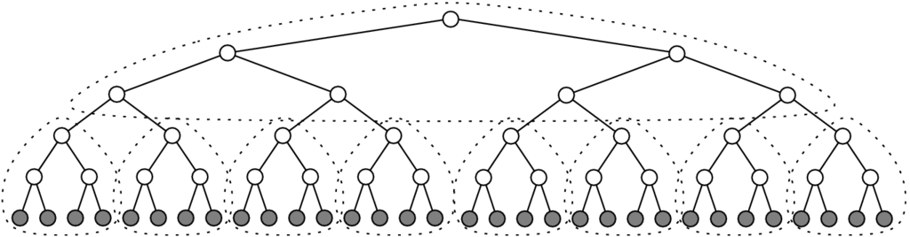
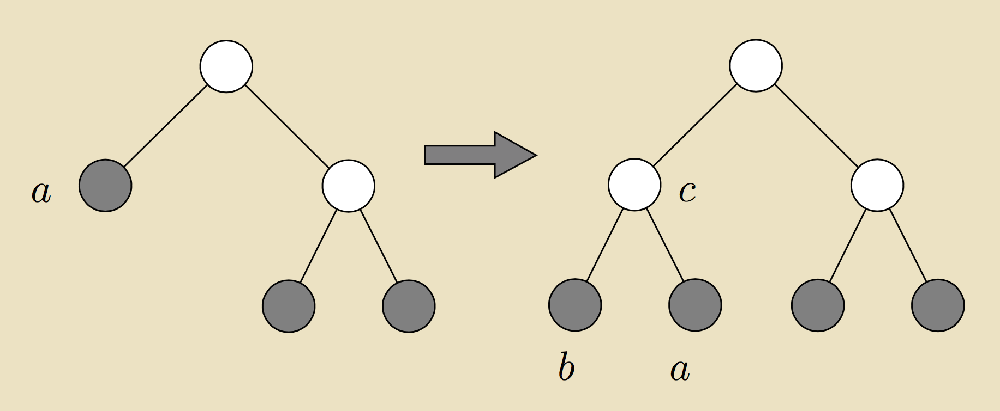

Matemáticas Discretas
Curso en línea
Este sitio web provee una guía con ejercicios para aprender matemáticas discretas. No es factible intentar aprender esto solamente por leer este sitio web sino es necesario apoyarse con un libro de texto; la biblioteca de la FIME tiene algunos libros útiles (incluyendo la de posgrado). Para recibir una formación de nivel internacional en áreas relacionadas a la computación, recomiendo mucho el libro Concrete Mathematics; se menciona en esta página cuando hay un capítulo o una sección de ese libro que convendría estudiar para profundizar un tema.
Otro libro altamente recomendable que también existe traducido al español es él de Grimaldi, Discrete and Combinatorial Mathematics: An Applied Introduction; los números de capítulos y secciones que menciono son los de la tercera edición en español, pero usando un índice temático deberían poder ubicar todo en otras ediciones o en el original en inglés sin problema. Tiene ejemplos muy simples y concretos de todos los conceptos, facilitando la vida para los que aún no llegan a una capacidad de abstracción suficiente para sentirse iluminados viendo ecuaciones y definiciones. Este libro de texto usé yo como estudiante en la universidad — matemáticas discretas fue mi tema favorito de todo en plan de estudios. La biblio debe tenerla, les doné un ejemplar yo misma en junio del 2015 (junto con un ejemplar de Concrete Mathematics, que probablemente termina en la biblio de posgrado — busquen siempre en ambas).
Es necesario leer el libro de texto para comprender los temas de la unidad de aprendizaje de una manera adecuada. Mínimo lean Wikipedia si la hueva no les permite estudiar de una forma más rigurosa. Leer solamente esta página no basta; es simplemente un resumen y una forma de establecer notación y terminología para nuestro uso ya que eso siempre varía entre libros y herramientas. Si lectura no es lo suyo, vean videos o algo.
Para experimentar con los conceptos, se utiliza como herramienta computacional el lenguaje Python en su versión 3. Para instalarlo en una computadora, visita a https://www.python.org/download y sigue las instrucciones.
Revisa tus respuestas a las tareas con cuidado antes de proceder a calificarlas. Ven a clase a consultar con la profesora si tienes dudas.
Lógica
Fundamentos
Para comenzar, es necesario aprender operaciones básicas de aritmética entera en Python (es decir, operaciones que toman como entrada números enteros y producen como salida números enteros): suma, resta, producto, potencia, división entera, residuo (módulo, discutido en la sección 3.4 de Concrete Mathematics). Prueba siempre todas las instrucciones de Python de los ejemplos hasta que estés seguro de entender exactamente qué es el efecto de cada instrucción.
También existe la aritmética donde los todos operandos y/o resultados no son enteros.
Además de números, en Python se puede manipular cadenas (de texto):
- Definición con comillas (simples o dobles, no importa).
- Concatenación con +.
- Repetición con *.
- Caracteres con acento no causan problemas en Python.
Valores se pueden guardar en variables:
Los valores guardados se pueden imprimir:
Aquí math es una librería de rutinas matemáticas adicionales, de la cual se está importando al programa una constante llamada pi. Lo de {:s} es un "separador de lugar" para imprimir en esa posición el valor de una cadena, mientras {:f} es para un valor con lugares decimales (no entero) y {:d} sería para un entero.
Notación matemática
Hay varios símbolos cuyo significado se debe conocer para poder interpretar adecuadamente ecuaciones y definiciones en cualquier campo de las matemáticas. Primeramente, la notación $x \Rightarrow y$ significa que si aplica $x$, también aplica $y$; a esto se le llama "implicación" y se profundiza la discusión más adelante en este curso sobre su significado formal.
Notaciones tipo $(a, b), (a, b], [a, b), [a, b]$ refieren a intervalos (discretos o continuos); un paréntesis implica que el valor extremo no pertenece al intervalo, mientras un corchete indica que también pertenece.
Fundamentos de conjuntos
Antes que nada, hay que aclarar la notación y terminología referente a conjuntos. Conjuntos son el tema del capítulo 3 de Grimaldi. Los conjuntos frecuentemente se representan visualmente con diagramas de Venn, tratados en la sección 3.3 de Grimaldi.
- $A = \{a, b, c\}$ es un conjunto con tres elementos.
- Se escribe $\sum_{i \in A}$ para la suma sobre todos los elementos de un conjunto $A$.
- Se escribe $\prod_{i \in A}$ para el producto sobre todos los elementos de un conjunto $A$.
- $|A|$ es la cardinalidad (es decir, el tamaño).
- Se escribe $\in$ para indicar pertenencia de un elemento a un conjunto: $a \in A$.
- $a \notin A$ significa que $a$ no pertenece a $A$.
Si tienes dudas sobre el comportamiento de sumas y productos, repasa leyendo la sección 1.1 de Grimaldi.
Por ejemplo, $\mathbb{Z}$ (enteros) y $\mathbb{R}$ (reales) son conjuntos de cardinalidad infinita, mientras $\emptyset$ es el conjunto vacío que no contiene ningún elemento.
- $A \cup B$ es la unión de dos conjuntos.
- $A \cap B$ es la intersección de dos conjuntos.
- $A \setminus B = \{a \mid a \in A, a \notin B\}$ es la diferencia.
Nota que necesariamente aplica que $|A \cup B| \geq \max\{|A|, |B|\}$ igual como $|A \cap B| \leq \min\{|A|, |B|\}$.
La notación $B \subseteq A$ indica que $B$ es un subconjunto de $A$, mientras se escribe $C \nsubseteq A$ para indicar que $C$ contiene algo que no esté en $A$. Nota que necesariamente $B \subset A \Rightarrow |B| < |A|$.
El símbolo $\exists$ refiere a la cuantificación existencial (es decir, algo aplica para por lo menos un elemento), mientras el símbolo $\forall$ refiere a la cuantificación universal (que aplica para todos).
Por lo general se supone que existe un universo de posibles elementos de los cuales los conjuntos están formados. En este caso, $\bar{A} = \{a \mid a \notin A\}$ refiere al complemento de $A$.
Representación digital
El bit es la unidad básica de información digital: tiene dos valores posibles que se interpreta como los valores lógicos "verdad" (1) y "falso" (0). La cantidad $b$ de bits requeridos para representar un valor $x\in\mathbb{Z}^{+}$ es el exponente de la mínima potencia de dos que es mayor a $x$: $$b = \min_{k \in \mathbb{Z}} \left\{k \mid 2^k > x \right\}.$$ Esto quiere decir que cada entero positivo es expresable como la suma de ciertas potencias de dos de tal manera que cada potencia aparece una vez (1) o ninguna (0); las potencias se ordenan de menor (a la derecha) a mayor (a la izquierda). A esta representación de los enteros se llama el sistema binario. $$\forall i \in \mathbb{Z}, \exists \mathbf{b} \in \{0, 1\}^\ast: i = \displaystyle \sum_{j = 0}^\infty b_j \times 2^j$$
| $j$ | $2^j$ | $j$ | $2^j$ | $j$ | $2^j$ |
|---|---|---|---|---|---|
| 0 | 1 | 14 | 16,384 | 28 | 268,435,456 |
| 1 | 2 | 15 | 32,768 | 29 | 536,870,912 |
| 2 | 4 | 16 | 65,536 | 30 | 1,073,471,824 |
| 3 | 8 | 17 | 131,072 | 31 | 2,147,483,648 |
| 4 | 16 | 18 | 262,144 | 32 | 4,294,967,296 |
| 5 | 32 | 19 | 524,288 | 33 | 8,589,934,592 |
| 6 | 64 | 20 | 1,048,576 | 34 | 17,179,869,184 |
| 7 | 128 | 21 | 2,097,152 | 35 | 34,359,738,368 |
| 8 | 256 | 22 | 4,192,304 | 36 | 68,719,476,736 |
| 9 | 512 | 23 | 8,388,608 | $\vdots$ | $\vdots$ |
| 10 | 1,024 | 24 | 16,777,216 | ||
| 11 | 2,048 | 25 | 33,554,432 | ||
| 12 | 4,096 | 26 | 67,108,864 | ||
| 13 | 8,192 | 27 | 134,217,728 |
El byte es la unidad básica de capacidad de memoria digital: es una sucesión de ocho bits, por lo cual el número entero más grande que se puede guardar en un solo byte es $2^8 - 1$ = 255. Un kilobyte es 1,024 bytes, un megabyte es 1,024 kilobytes (1,048,576 bytes) y un gigabyte es 1,024 megabytes (1,073,741,824 bytes). Normalmente el prefijo "kilo" implica un mil, pero como mil no es ningún potencia de dos, eligieron la potencia más cercana, $2^{10}$ = 1,024, para corresponder a los prefijos.
Cualquier entero positivo podría servir como base a una representación, no solamente el dos. La computación usa mucho el dos por la facilidad de la representación binaria con fenómenos físicos (apagado versus encendido; alto versus bajo). Dado un entero positivo $k$, su conjunto residual consiste en todos los enteros desde cero hasta $k-1$, $$\mathbb{Z}_k = \{0, 1, 2, \ldots, k-2, k-1\},$$ es decir, todos los posibles resultados del residuo cuando se divide a cualquier entero positivo entre $k$. Por ejemplo, $\mathbb{Z}_2 = \{0, 1\}$.
| Sistema ternario | $\forall i \in \mathbb{Z}, \exists \mathbf{b} \in \mathbb{Z}_3^\ast: i = \displaystyle \sum_{j = 0}^\infty b_j \times 3^j$ |
|---|---|
| Sistema octal | $\forall i \in \mathbb{Z}, \exists \mathbf{b} \in \mathbb{Z}_8^\ast: i = \displaystyle \sum_{j = 0}^\infty b_j \times 8^j$ |
| Corresponde a grupos de tres bits. | |
| Sistema decimal | $\forall i \in \mathbb{Z}, \exists \mathbf{b} \in \mathbb{Z}_{10}^\ast: i = \displaystyle \sum_{j = 0}^\infty b_j \times 10^j$ |
| Sistema hexadecimal | $\forall i \in \mathbb{Z}, \exists \mathbf{b} \in \mathbb{Z}_{16}^\ast: i = \displaystyle \sum_{j = 0}^\infty b_j \times 16^j$ |
| Corresponde a grupos de cuatro bits; $a$ = 10, $b$ = 11, $\ldots$, $f = 15$. | |
| Base arbitraria | $k \in \mathbb{Z}, k > 1, \forall i \in \mathbb{Z}, \exists \mathbf{b} \in \mathbb{Z}_k^\ast: i = \displaystyle \sum_{j = 0}^\infty b_j \times k^j$ |
Ejemplos de conversión de distintas bases a la base decimal
Ejemplos de conversión de la base decimal a otras bases
Para representar números reales por computadora, hay que definir hasta que exactitud se guarda los decimales del número. Punto flotante es la representación se adapta al orden de magnitud del valor $x \in \mathbb{R}$ por trasladar la coma decimal hacia la posición de la primera cifra significativa de $x$ mediante un exponente $\gamma$, $x = m \cdot b^\gamma$, donde $m$ se llama la mantisa y contiene los dígitos significativos de $x$. El parámetro $b$ es la base del sistema de representación, mientras $\gamma \in \mathbb{Z}$ determina el rango de valores posibles (por la cantidad de memoria que tiene reservada).
Hay que tener mucho cuidado con la operación de parte entera en programación, como implica pérdida de datos. Por ejemplo, considera lo siguiente:
Esto suele resultar en b asignada al valor 2 y no 3, porque por la representación binaria de punto flotante de 0.6 y 0.2, su división resulta en 2.9999999999999996.
Lógica booleana
La lógica es el tema del capítulo 2 de Grimaldi. El momento que necesites ejemplos detallados, checa el libro.
Los valores de verdad son dos: verdad $\top$ y falso $\bot$, frecuentemente representados como uno y cero, respectivamente (como en el sistema binario). Variables booleanas pueden tomar estos valores. Por ejemplo, comparaciones de números producen valores de verdad:
Se tiene un conjunto $X = \{ x_1, x_2, \ldots \}$ de variables (también: llamados átomos). Cada variable puede tomar el valor "verdad" $\top$ o "falso" $\bot$. La negación de una variable $x_i$. $\neg x_i = \top$ si $x_i = \bot$, mientras $\neg x_i = \bot$ si $x_i = \top$. Es decir, $\neg x_i$ se lee "no $x_i$" (en inglés: "not $x_i$").
Se forman proposiciones combinando los valores de verdad y/o variables booleanas con conectivos. Expresiones básicas son los literales $x_i$ y $\neg x_i$. Se forman más expresiones utilizando los conectivos $\vee $ ("o" lo que en inglés es un "or"), $\wedge $ ("y" lo que en inglés es un "and") — también $\neg$ se considera un conectivo. Si $\phi_1$ y $\phi_2$ son expresiones booleanas, también $(\phi_1 \vee \phi_2)$, $(\phi_1 \wedge \phi_2)$ y $\neg \phi_1$ lo son.
Los operadores lógicos básicos son "no" con "y" o "o". Con la negación unaria y uno de los dos operadores binarios, se pueden definir el resto. Los operadores lógicos derivados incluyen los siguientes:
- $\oplus$ = XOR (o exclusivo),
- $\rightarrow$ = implicación y
- $\leftrightarrow$ = equivalencia.
| $\varphi_1 \oplus \varphi_s$ significa $(\varphi_1 \vee \varphi_2) \wedge \neg (\varphi_1 \wedge \varphi_2)$ |
| $\displaystyle\bigvee_{i=1}^n \varphi_i$ significa $\varphi_1 \vee \cdots\vee \varphi_n$ |
| $\displaystyle\bigwedge_{i=1}^n \varphi_i$ significa $\varphi_1 \wedge \cdots\wedge \varphi_n$ |
| $\phi_1 \rightarrow \phi_2$ significa $\neg \phi_1 \vee \phi_2$ |
| $\phi_1 \leftrightarrow \phi_2$ significa $(\neg \phi_1 \vee \phi_2) \wedge (\neg \phi_2 \vee \phi_1)$ |
Uno puede definir subrutinas propias en Python para XOR, implicación y equivalencia.
Para determinar si una expresión booleana se puede satisfacer con alguna asignación a sus variables, se procede a evaluar todas las posibles combinaciones de valores a sus variables de forma sistemática en un cuadro. A este cuadro se le dice "tabla de verdad"; abajo están las tablas de verdad de "y", "o" y "xor".
| $a$ | $b$ | $a \wedge b$ |
|---|---|---|
| $\bot$ | $\bot$ | $\bot$ |
| $\bot$ | $\top$ | $\bot$ |
| $\top$ | $\bot$ | $\bot$ |
| $\top$ | $\top$ | $\top$ |
| $a$ | $b$ | $a \vee b$ |
|---|---|---|
| $\bot$ | $\bot$ | $\bot$ |
| $\bot$ | $\top$ | $\top$ |
| $\top$ | $\bot$ | $\top$ |
| $\top$ | $\top$ | $\top$ |
| $a$ | $b$ | $a \oplus b$ |
|---|---|---|
| $\bot$ | $\bot$ | $\bot$ |
| $\bot$ | $\top$ | $\top$ |
| $\top$ | $\bot$ | $\top$ |
| $\top$ | $\top$ | $\bot$ |
Si la expresión contiene $n$ variables, su tabla de verdad contiene $2^n$ renglones. Conviene crear columnas auxiliares para subexpresiones cuando la expresión contiene múltiples conectivos.
Un posible orden de precedencia de operadores lógicos es el siguiente (aunque no viene escrita en piedra más allá de que la negación sea la más fuerte — en electrónica es común que $\wedge$ sea más fuerte que $\vee$ y no hay ningún acuerdo global sobre la posición del $\oplus$) de la más fuerte al más débil: $\neg$, $\vee $, $\wedge $, $\rightarrow$, $\leftrightarrow$. Por ejemplo $$\neg x_1 \vee x_2 \rightarrow x_3 \leftrightarrow \neg x_4 \wedge x_1 \vee x_3$$ debería ser interpretada bajo este orden de precedencia como $$((((\neg x_1) \vee x_2) \rightarrow x_3) \leftrightarrow ((\neg x_4) \wedge (x_1 \vee x_3))).$$ Se recomienda siempre utilizar paréntesis para evitar confusión, y al no ser posible, especificar de manera explícita la precedencia que no utiliza.
Árboles de decisión son representaciones gráficas de expresiones booleanas donde las variables se representan como hojas de un árbol y los operadores lógicos reunen ramos (más que la negación, siendo unaria, es de un sólo ramo). Se asignan los valores de verdad a las variables y se propagan a través de la evaluación de los operadores hasta alcanzar la raíz del árbol que contiene el último operador por evaluar y así produce el valor de la expresión.
Un variante de este concepto son los diagramas de decisión binarios (inglés: binary decision diagram, BDD) que representan funciones booleanas de tal forma que cada nivel corresponde a una variable y sus posibles valores (verdad y falso) producen dos ramos. Obviamente diferentes ordenamientos de variables producen diferentes árboles.Ilustración modificada del original en https://upload.wikimedia.org/wikipedia/commons/9/91/BDD.png para eliminar color de fondo blanco.
{kind=link}
Se puede simplificar a un BDD eliminando recursivamente estructuras repetidas hasta que ya no quede ninguna.

Inferencia refiere a derivar expresiones verdaderas a partir de un conjunto de expresiones que se conocen ser verdaderas. Las reglas básicas de inferencia incluyen la modus ponens $$(a \wedge (a \rightarrow b)) \Rightarrow b,$$ modus tollens $$((a \rightarrow b) \wedge \neg b) \Rightarrow \neg a$$ y el silogismo $$((a \rightarrow b) \wedge (b \rightarrow c)) \Rightarrow (a \rightarrow c).$$
Denotamos por $X(\phi)$ el conjunto de variables booleanas que aparezcan en una expresión $\phi$. Una asignación de valores de verdad $T: X' \rightarrow \{\top,\bot\}$ se dice adecuada para $\phi$ si $X(\phi) \subseteq X'$ (es decir, cada variable recibe un valor). Escribamos $x_i \in T$ si $T(x_i) = \top$ y $x_i \notin T$ si $T(x_i) = \bot$.
Si $T$ satisface a $\phi$, se escribe $T \models \phi$.
- Si $\phi \in X'$, $T \models \phi$ si y sólo si $T(\phi) = \top$.
- Si $\phi = \neg \phi'$, $T \models \phi$ si y sólo si $T \not\models \phi'$.
- Si $\phi = \phi_1\wedge \phi_2$, $T \models \phi$ si y sólo si $T \models \phi_1$ y $T \models \phi_2$.
- Si $\phi = \phi_1\vee \phi_2$, $T \models \phi$ si y sólo si $T \models \phi_1$ o $T \models \phi_2$.
En inglés, la expresión "si y sólo si" se suele abreviar como "iff" por "if and only if"; se puede anotar como una equivalencia lógica con $\Leftrightarrow$ en vez de escribirlo en letra: $\Phi_a \Leftrightarrow \Phi_b$ significa lo mismo que $\Phi_a$ es cierto si y sólo si $\Phi_b$ es cierto.
Dada una expresión booleana y una asignación a sus variables, el proceso de determinar sí o no la expresión es verdadera se conoce como la evaluación de esa expresión bajo esa asignación.
Código en python3 para evaluación de expresiones booleanas
Terminología relevante sobre expresiones booleanas
- A una expresión booleana $\phi$ se dice satisfactible si existe una $T$ adecuada para $\phi$ tal que $T \models \phi$.
- A una expresión booleana $\phi$ se dice válida si $\forall T: T \models \phi$, es decir, se evalua como verdadera bajo cualquier asignación.
- Una expresión válida se le dice tautología y se escribe simplemente $\models \phi$.
- $\phi$ es una tautología si sólo si $\neg\phi$ es no satisfactible
Dos expresiones $\phi_1$ and $\phi_2$ son lógicamente equivalentes si para toda asignación $T$ que es adecuada para las dos expresiones aplica que $T \models \phi_1$ si y sólo si $T \models \phi_2$. La equivalencia lógica se denota por $\phi_1 \equiv \phi_2$.
La forma normal conjuntiva CNF utiliza puramente el conectivo $\wedge $ y literales. La forma normal disyunctiva DNF utiliza puramente el conectivo $\vee $ y literales. Una conjunción de literales se llama un implicante y una disyunción de literales se llama una cláusula. Supongamos que ninguna cláusula ni implicante sea repetido en una forma normal, y tampoco se repiten literales dentro de las cláusulas o los implicantes. Las expresiones en forma normal pueden en el peor caso tener un largo exponencial en comparación con el largo de la expresión original.
Transformaciones de expresiones lógicas se realizan aplicando reglas de equivalencia:
- Reemplazar $\phi_1\leftrightarrow\phi_2$ con $(\neg\phi_1\vee \phi_2) \wedge (\neg\phi_1\vee \phi_2)$.
- Reemplazar $\phi_1\rightarrow\phi_2$ con $\neg\phi_1\vee \phi_2$.
- Mover los $\neg$ a las variables para formar literales:
- $\neg\neg \phi$ se reemplaza con $\phi$,
- $\neg(\phi_1\vee \phi_2)$ se reemplaza con $\neg \phi_1\wedge \neg \phi_2$ y
- $\neg(\phi_1\wedge \phi_2)$ se reemplaza con $\neg \phi_1\vee \neg \phi_2$.
Transformaciones al CNF se logran moviendo los $\wedge $ afuera de los disyunciones:
- $\phi_1\vee (\phi_2\wedge \phi_3)$ se reemplaza con $(\phi_1\vee \phi_2)\wedge (\phi_1\vee \phi_3)$,
- $(\phi_1\wedge \phi_2)\vee \phi_3$ se reemplaza con $(\phi_1\vee \phi_3)\wedge (\phi_2\vee \phi_3)$.
Para transformaciones al DNF, se mueven los $\vee $ afuera de los conjunciones:
- $\phi_1\wedge (\phi_2\vee \phi_3)$ se reemplaza con $(\phi_1\wedge \phi_2)\vee (\phi_1\wedge \phi_3)$,
- $(\phi_1\vee \phi_2)\wedge \phi_3$ se reemplaza con $(\phi_1\wedge \phi_3)\vee (\phi_2\wedge \phi_3)$.
Una función booleana $f$ de $n$-dimensiones es un mapeo de $\{ \top, \bot \}^n$ al conjunto $\{ \top, \bot\}$. La negación $\neg$ corresponde a una función unaria $f^{\neg}: \{\top, \bot\} \rightarrow \{\top, \bot\}$, mientras los otros dos conectivos básicos $\vee$ y $\wedge$ (igual como los derivados $\oplus$, $\rightarrow$ y $\leftrightarrow$) definen cada uno una función binaria $f : \{\top, \bot\}^2 \rightarrow \{\top, \bot\}$. Cada expresión booleana se puede interpretar como una función booleana con la dimensión $n = |X(\phi)|$. La expresión $\phi$ expresa una función $f$ si cada $n$-eada de valores de verdad $\tau = (t_1,\ldots,t_n)$ aplica que $$ f(\tau)= \left\{ \begin{array}{ll} \top, & \text{ si } T\models\phi, \\ \bot, & \text{ si } T\not\models\phi, \end{array} \right. $$ donde $T$ es tal que $T(x_i) = t_i$ para todo $i = 1,\ldots,n$.
Problema de satisfiabilidad SAT
Entrada: una expresión booleana $\phi$ en CNF.
Pregunta: ¿ es $\phi$ satisfactible?
Al SAT se puede resolver utilizando tablas de asignaciones en tiempo $\mathcal{O}(n^2 \cdot 2^n).$ (Más adelante veremos qué quiere decir esa cosa de $\mathcal{O}$.)
Lógica proposicional, llamado "lógica de primer orden", es una lógica donde se cuantifica a variables individuales y las proposiciones tienen que ver con si existe ($\exists$) una variable para la cual una condición estée válida o si para todas ($\forall$) las aplique alguna condición. Los cuantificadores se discuten en la sección 2.4 de Grimaldi. Nota que $\neg \forall P$ significa "no para todos aplica P" es lo mismo que $\exists \neg P$, es decir, "existe algo para el cual no aplica P".
Operaciones con valores de verdad, cuando se expresan en términos de cero (falso) y uno (verdad), son en realidad álgebra booleana (checa el capítulo 15 de Grimaldi por más detalles). Por lo general $\wedge$ es una multiplicación, $\vee$ es redondear hacía arriba el promedio y $\oplus$ es como sumar en módulo dos.
Operaciones lógicas con enteros
La aritmética binaria refiere a la lógica booleana que opera con los bits de uno o dos enteros. Las operaciones típicas son
- la negación "no" (~)
- la conjunción "y" (&)
- la disyunción "o" (|)
- la disyunción exclusiva "xor" (^)
Ejemplo de una conjunción por bits
Tarea 1
Pregunta 1: Álgebra de conjuntos: El resultado de $A \cup (B \setminus (C \cap D))$ con $A = \{$2, 4, 6, 8$\}$, $B = \{$3, 5, 7$\}$, $C = \{$1, 2, 3, 4$\}$ y $D = \{$4, 5, 6, 7, 9$\}$:
Pregunta 2: Interpretación de números binarios: El valor decimal del número binario 10001111:
Pregunta 3: Conversión de bases: La representación en base 5 del valor decimal 78:
Pregunta 4: Aritmética binaria: El resultado de (a & (b << c)) donde $a$ = 1000, $b$ = 500 y $c$ = 7:
Pregunta 5: Evaluación de expresiones booleanas: El valor binario de la expresión $(x \vee z) \wedge \neg (\neg y \vee \neg z)$ cuando $x =$ 1, $y =$ 0 & $z =$ 1:
Preguntas de verificación
Discute lo siguiente con los compañeros y con la profesora hasta que esté todo claro. Conviene consultar el libro de texto (capítulos y secciones indicados en el material de la unidad en esta página) y hasta buscar por videos en la web. Cuando ya no cabe duda, procede a la segunda unidad temática.
¿Para qué sirven los conjuntos? ¿Qué relación tienen con consultas en bases de datos? ¿Por qué no importa en que orden están los elementos? ¿Por qué no puede entrar un mismo elemento muchas veces en un conjunto? (Pregunta 1)
¿Para qué sirve la base dos? ¿Por qué se llama binario? ¿Para qué existen otras bases como 16 y 20? ¿Qué relaciones tienen entre ellos las bases 2, 8 y 16? (Preguntas 2 y 3)
¿Por qué se hace lógica con enteros y no solamente con valores de verdad sencillas de un sólo bit? ¿Qué se gana con esto? ¿Para qué se puede aplicar? (Pregunta 4)
¿Qué aplicaciones tiene en la ingeniería la lógica booleana? ¿Para qué lo necesita un mecatrónico? ¿Para qué lo necesita un administrador de sistemas? ¿Para qué lo necesita un ingeniero de software? ¿Qué relación tiene con circuitos digitales? ¿Qué relación tiene con la programación? (Pregunta 5)
Combinatoria
La combinatoria estudia maneras de seleccionar y ordenar elementos de conjuntos. Una permutación es un ordenamiento de los elementos de un conjunto. Si $|A| = k$, existen $k! = 1 \times 2 \times \ldots \times (k - 1) \times k$ permutaciones de los elementos de $A$. Las permutaciones son el tema de la sección 1.2 de Grimaldi.
La función $k!$ es el factorial: $$n! = \prod_{k=1}^n k$$ para enteros positivos (factorial de cero se puede definir por cuestiones de compatibilidad como, aunque en algunos textos prefieren el cero, según para qué propósito se define). La función factorial es el tema de la sección 4.4 de Concrete Mathematics.
Por ejemplo, si $A = \{a, b, c\}$, se tiene $3! = 6$ posibles permutaciones: $abc, acb, bac, bca, cab, cba$. Esto es porque hay $k$ maneras de seleccionar el primer elemento, $k-1$ opciones para el segundo, etcétera, hasta que en el último elemento ya no queda más que una sola opción.
Para todo este tipo de cosa, en Python conviene utilizar la librería itertools.
Se puede pensar en una permutación como un mapeo de posiciones originales a las nuevas posiciones. Una composición de permutaciones es la aplicación de una después de otra. Estos mapeos se pueden representar con matrices de adyacencia que indiquen cuál elemento va en lugar de cuál y la multiplicación de estas matrices da el efecto de composición de las permutaciones. Permutaciones de $n$ elementos y su composición forman un grupo.
Para seleccionar desde un conjunto $A$, $|A| = n$, un subconjunto de cardinalidad $0 \leq k \leq n$, hay $\binom{n}{k} = \displaystyle\frac{n!}{k!(n - k)!}$ maneras de hacer esto: el primer elemento se selecciona libremente entre los $n$ elementos, mientras el segundo tiene $n - 1$ opciones, etc., pero al hacer esto hay $k!$ formas de llegar a seleccionar el mismo subconjunto pero en un orden distinto.
A este tipo de conjuntos seleccionados se les llaman combinaciones y se discuten en la sección 1.3 de Grimaldi. Al valor $\binom{n}{k}$ se llama el coeficiente binomial. Las coeficientes binomiales son el tema del capítulo 5 de Concrete Mathematics.
Aunque varias librerías ya la contienen, conviene saber definir una subrutina (ligeramente optimizada) para calcular el coeficiente binomial en Python.
Para crear combinaciones de elementos desde un conjunto, pero permitiendo repeticiones, la fórmula cambia ya que el elemento seleccionado sigue siendo un candidato para selecciones futuras: $\binom{n + k - 1}{k}$.
El conjunto potencia $2^A$ está formado por todos los posibles subconjuntos de $A$ (incluyendo al $A$ mismo y a $\emptyset$). Aplica que $|2^A| = 2^{|A|}$.
Demostraciones
En las matemáticas, a los hechos universales se les dice axiomas. Una definición es una manera de fijar el sentido de algún formalismo, notación o terminología. La meta de las demostraciones es derivar de los axiomas y las definiciones, algunos teoremas. (Teoremas auxiliares que se obtienen como resultados intermedios al buscar comprobar alguna cosa mayor se llaman lemas.) La demostración en sí es una cadena de pasos que establecen que un teorema sea verdad.
Una técnica básica de demostración es la inducción, donde primero se establece que una condición inicial $c_1$ es válida y verdadera (el paso base). Luego, el paso inductivo consiste en comprobar que si $c_k$ es válida y verdadera, también $c_{k+1}$ lo debe ser. La inducción matemática es el tema del capítulo 4 de Grimaldi.
Por ejemplo, para resolver a $$T(n) \leq \left\{ \begin{array}{ll} c, & \text{ si } n = 1 \\ g\Big(T(n/2), n\Big), & \text{ si } n > 1 \end{array}\right.$$ primero adivinamos que la solución sea, en forma general, $T(n) \leq f(a_1, \ldots, a_j, n)$, donde $a_1, \ldots, a_j$ son parámetros de la función $f$. Para mostrar que para algunos valores de los parámetros $a_1, \ldots, a_j$ aplica $\forall n$ que la solución sea la adivinada, tenemos que demostrar que $c \leq f(a_1, \ldots, a_j, 1) $ y también que si $n > 1$, $$g\left(f\left(a_1, \ldots, a_j, \frac{n}{2}\right), n\right) \leq f(a_1, \ldots, a_j, n).$$
Aplica que $T(k) \leq f(a_1, \ldots, a_j, k)$ para $1 \leq k < n$ por inducción, obteniendo $$T(n) \leq g\left(T\left(\textstyle\frac{n}{2} \right), n\right) \leq g\left(f\left(a_1, \ldots, a_j, \textstyle\frac{n}{2}\right), n\right) \leq f(a_1, \ldots, a_j, n)$$ si $n > 1$.
Ecuaciones de recurrencia como ésta y su solución son el tema de la sección 7.3 de Concrete Mathematics y del capítulo 10 de Grimaldi.
Principios y teoremas útiles
El principio de palomar (veáse la sección 5.5 de Grimaldi) establece que si $m$ palomas estén ocupando un total de $n$ nidos y $m > n$, entonces por lo menos un nido contiene dos o más palomas. (Yo sé, suena a sentido común.)
El principio de inclusión-exclusión (tema del capítulo 8 de Grimaldi) es un poco más complejo, pero tampoco es posible de entender: dado un conjunto $C$ de cardinalidad $n$ y un total de $t$ condiciones $c_i$, el número de elementos en $C$ que no satisfacen ninguna condición es $$ \bar{n} = n - \sum_{1 \leq i \leq t} n_{c_i} + \sum_{1 \leq i < j \leq t} n_{c_i c_j} - \sum_{1 \leq i < j < k \leq t} n_{c_i c_j c_k} \ldots + (-1)^t n_{c_1 c_2 \ldots c_t} $$ donde $n_S$ es el número de elementos que satisfacen todas las condiciones incluidos en $S$. Nota los signos alternantes.

El teorema de Burnside (que mucha gente argumenta no ser de Burnside, pero así se conoce) sirve para problemas de conteo de configuraciones posibles. Se explica en términos de ejemplos paso a paso en la sección 16.9 de Grimaldi. Sea $C$ un conjunto de configuraciones sobre las cuales se opera con un grupo finito de permutaciones $\mathbb{G}$; habrá $$\frac{1}{|\mathbb{G}|} \sum_{\pi \in \mathbb{G}} \psi(\pi)$$ clases de equivalencia a las cuales $C$ se divide por ser actuado con $\mathbb{G}$, donde $\psi(\pi)$ es la cantidad de configuraciones en $C$ que son fijas bajo la permutación $\pi$.
Esto es un caso especial del método de enumeración de Polya (tratado en la sección 16.11 de Grimaldi) que se expresa en términos de polinomios que representan posibles patrones. También el capítulo 17 de Grimaldi sigue en este tipo de temas. Para personas que contemplan un posgrado como una opción futura, se recomienda estudiar estos capítulos también. Para inges comunes y corrientes no es tan crítico saber manipular funciones generadoras y anillos de polinomios, pero por ejemplo en mi campo de estudio son bastante relevantes.
Sucesiones, secuencias y series
La sucesión de Fibonacci: $$\mathcal{F}_k = \left \{ \begin{array}{ll} 0, &\text{ si } k = 0 \\ 1, &\text{ si } k = 1 \\ \mathcal{F}_{k - 1} + \mathcal{F}_{k - 2}, &\text{ para } k > 1. \end{array} \right.$$ Ésta es una definición recursiva: algo se define en términos de si mismo. Para más información sobre definiciones recursivas, checa la sección 4.2 de Grimaldi.
A los elementos de la sucesión $\mathcal{F}$ se les dice los los números Fibonacci; son el tema de la sección 6.6 de Concrete Mathematics. Para la tarea 1, se recomienda usar una subrutina en Python para calcularla.
A los números de Fibonacci aplica que $\mathcal{F}(a) > \frac{\phi^a}{\sqrt{5}} - 1$ donde $\phi = \frac{1 + \sqrt{5}}{2}$ es la tasa dorada $\approx 1.618$.
En Python, range(n) va desde cero hasta $n - 1$. Nota que listado[-1] accede al último elemento de una secuencia y listado[-2] al penúltimo.
Dada una secuencia, es común querer realizar operaciones con ella, como por ejemplo sumas o productos totales o parciales de sus elementos. Se escribe $\sum_{i = a}^b$ para la suma donde un índice $i$ toma valores enteros desde $a$ hasta $b$ en pasos de uno, mientras para la suma parcial hasta el $n$ésimo elemento se escribe $$S = x_1 + x_2 + x_3 + \ldots + x_n = \displaystyle\sum_{i = 1}^n x_i.$$ Para el producto (multiplicación), la notación es $$P = x_1 \cdot x_2 \cdot x_3 \cdot \ldots \cdot x_n = \displaystyle\prod_{i = 1}^n x_i.$$
Sumas son el tema del capítulo 2 de Concrete Mathematics. Les aplica la ley de distribución $$\sum_{k \in K} c \times a_k = c \sum_{k \in K} a_k$$ y la ley de asociación $$\sum_{k \in K} (a_k + b_k)= \sum_{k \in K} a_k + \sum_{k \in K} b_k.$$
Una suma infinita es una suma sobre una secuencia infinita o un conjunto infinito de elementos. Si el valor de una sumatoria es finita, se dice que esa suma converge (si no convegre, diverge). Recuerda que sumas son efectivamente "integrales discretas".
La diferencia entre conjuntos y secuencias es que una secuencia tiene un orden mientras un conjunto no lo tiene. Por ende, en Python las secuencias no son lo mismo que conjuntos, aunque también de puede sumar y multiplicar sobre conjuntos. En secuencias se puede tener elementos repetidos, mientras en conjuntos esto no sucede.
Dada dos secuencias $F = f_0, f_1, f_2, \ldots$ y $G = g_0 g_1 g_2 \ldots$, su convolución (ver la sección 7.5 de Concrete Mathematics) es una secuencia $f_0 g_0, f_0 g_1 + g_0 f_1, \ldots$ donde los elementos valen $$\sum_k f_k g_{n - k}.$$ Nota que no importa cuál es $f$ y cuál es $g$ ya que su intercambio no afecta el resultado.
Para entender qué sucede, intenta imaginar las secuencias como cintas. Voltea la cinta de $g$ y ponla encima de la cinta de $f$ así que los elementos cero estén uno encima de otro; el primer elemento viene su multiplicación. Ahora, desliza la cinta de $g$ una posición para que coincidan dos elementos. Multiplica juntos los que estén uno encima de otro y suma sobre las multiplicaciones. Luego que coindican tres elementos, etc.
También existen versiones donde se toman en cuenta los elementos que no coinciden con otros; son muy importantes en el procesamiento de señales y su versión en dos dimensiones (con matríces en vez de vectores) se necesita en la visión computacional (es decir, procesamento de imágenes).
Una secuencia finita con un orden interesante es el código Gray que consiste en todas las cadenas binarias de $b$ bits, ordenadas de tal forma que cada cadena difiere del anterior en un solo bit (esto aplica también con la primera y la última cadema). Se puede definir de manera recursiva, comenzando con un código vacio (la cadena vacía se denota por $\epsilon$): toma el código existente, sácale una copia; invierte el orden de esta copia y péga las dos copias juntos; luego, agrega un cero al inicio de la primera mitad y un uno al inicio de la segunda mitad. Éste es el código de largo uno, $\ell = 1$. Repite para obtener un código de $\ell = 2$, etc.
| $\ell = 0$ | $\ell = 1$ | $\ell = 2$ | $\ell = 3$ |
|---|---|---|---|
| $\epsilon$ | 0 | 00 | 000 |
| 1 | 01 | 001 | |
| 11 | 011 | ||
| 10 | 010 | ||
| 110 | |||
| 111 | |||
| 101 | |||
| 100 |
Preguntas de mucha importancia práctica con secuencias incluyen
- Conociendo el valor del elemento, ¿cuál es su posición en la secuencia? (rank)?
- Conociendo la posición, ¿cuánto vale el elemento? (unrank)?
Aritméticas
Serie: $x_{i + 1} - x_i = d$, donde $d$ es constante: $S_n = \displaystyle\sum_{i = 0}^{n-1} (x_1 + i\cdot d) = \displaystyle\frac{n(x_1 + x_n)}{2}$.
Progresión: $\sum_{k = 0}^n (a + bk) = (a + bk/2)(n + 1)$.
Geométricas
Serie: $x_{i+1} = x_i \cdot d$: $S = \displaystyle\sum_{i = 0}^{\infty} d^i x_i = \displaystyle\frac{x_1}{1 - d}$ y $S_n = \displaystyle\sum_{i = 0}^n d^i x_i = \displaystyle\frac{x_1(1 - d^{n+1})}{1 - d}$.
Progresión: $\sum_{k = 0}^n a \times x^k = \frac{a - ax^{n+1}}{1 - x}$.
Relaciones, mapeos y funciones
Este tema se trata en el capítulo 5 de Grimaldi y nuevamente en el capítulo 7. Cualquier cosa que no entiendes viendo esta página tendrás que consultar en el libro. Hay muchos ejemplos.
Relación $\mathcal{R}$
- $A \times B = \{(a, b) \mid a \in A, b \in B\}$.
- $\mathcal{R} \subseteq A \times B$.
- $(a, b) \in \mathcal{R}$ o alternativamente $a \mathcal{R} b$.
- Se pueden representar con una matriz de adyacencia: $a_{ij} = 1$ si $(a_i, a_j) \in \mathcal{R}$ mientras $a_{ij} = 0$ si $(a_i, a_j) \notin \mathcal{R}$.
- Transitiva: $\forall a, b, c \in A$ tales que $a \mathcal{R} b$ y $b \mathcal{R} c$, $a \mathcal{R} c$.
- Reflexiva: $\forall a \in A$, $a \mathcal{R} a$.
- Simétrica: $(a_i, a_j) \in \mathcal{R} \Leftrightarrow (a_j, a_i) \in \mathcal{R}$.
Mapeo $g$
- $g: A \rightarrow B$, $g(a) = b$ para significar que $(a, b) \in \mathcal{R}_g$.
- $A$ es el dominio y $B$ es el rango.
- Los $b_i \in B$ para las cuales aplica $(a, b_i) \in \mathcal{R}_g$ forman la imagen de $a$ en $B$.
- Los elementos de $A$ que corresponden a un $b \in B$ así que $(a, b) \in \mathcal{R}_g$ son la imagen inversa de $b$, $g^{-1}(b)$.
- Epiyectivo: $\forall b \in B \exists a \in A \text{ tal que } g(a) = b$.
- Inyectivo: $\forall a_1, a_2 \in A$ tales que $g(a_1) = g(a_2) \Rightarrow a_1 = a_2$.
- Biyectivo: inyectivo y epiyectivo.
- Ejemplo en Python
Una función $f: A \rightarrow B$ es un mapeo que asigna a cada elemento de $A$ un único elemento de $B$. Por ejemplo,
- $|x| = \left \{ \begin{array}{rl} x, & \text{ si } x \geq 0 \\ -x, & \text{ si } x < 0. \end{array} \right .$
- $\exp(x) = e^x = \displaystyle\sum_{i = 0}^\infty \frac{x^i}{i!} = 1 + x + \frac{x^2}{2!} + \frac{x^3}{3!} + \ldots$.
Python tiene una librería math de funciones comunes.
$f(x) = \exp(x)$ es la función exponencial, que también se define como un límite $$e^x = \displaystyle\lim_{n \rightarrow \infty} \left ( 1 + \frac{x}{n}\right )^n;$$ su derivada es la misma $D(e^x) = e^x$. Además tiene las mismas propiedades que cualquier exponenciación a base $b$; simplemente en este caso la base $b = e \approx 2,718281828$, lo que es la constante de Napier.
- $b^0 = 1$.
- $b^1 = b$.
- $b^{a + c} = b^a b^c$.
- $b^{ac} = (b^a)^c$.
- $b^{-a} = \left(\frac{1}{b}\right)^a = \frac{1}{b^a}$.
Su función inversa es el logaritmo:
- La definición es $b^{\log_b x} = x$ donde $x > 0$.
- Si $\log_b x = y$, $b^y = x$ por definición.
- Se define que $\log_b 1 = 0$.
- Cambios de base: $\log_{b'}(x) = \displaystyle\frac{\log_b(x)}{\log_b(b')}$.
- Logaritmo es una función inyectiva: $\log_b x = \log_b y \Longrightarrow x = y$.
- También es creciente: $x > y \Longrightarrow \log_b x > \log_b y$.
- Aplica para la multiplicación que $\log_b (x \cdot y) = \log_b x + \log_b y$.
- División es un caso especial de la multiplicación: $\log_b \left(\frac{x}{y}\right) = \log_b x - \log_b y$.
- Potencia también es simplemente multiplicación repetida: $\log_b x^c = c \log_b x$.
- Factorial también es una multiplicación repetida: $\log_b(n!) = \displaystyle\sum_{i = 1}^n \log_b i$.
- Logaritmo en el exponente permite un cambio de variables: $x^{\log_b y} = y^{\log_b x}$.
- El logaritmo natural usa la base $e$: $\ln(x) = \log_e(x).$
Ejemplos de logaritmos para practicar calcularlos en la cabeza
Redondeo de decimal a entero
Funciones de redondeo son el tema del capítulo 3 de Concrete Mathematics.
Piso: $\lfloor x \rfloor = \max_{y \in \mathbb{Z}} \{y \mid x \geq y\}$. Por definición, $\forall x \in \mathbb{R}$, $\lfloor x \rfloor \leq x < \lfloor x + 1 \rfloor$, $x - 1 < \lfloor x \rfloor \leq x$ y $\forall k \in \mathbb{Z}$ y $x \in \mathbb{R}$ aplica $\lfloor k + x \rfloor = k+ \lfloor x \rfloor$.
Techo: $\lceil x \rceil = \min_{y \in \mathbb{Z}} \{y \mid x \leq y\}.$ Aplica por definición que $x \leq \lceil x \rceil < x + 1$.
Consideremos el siguiente código:
donde la regla de asignar un valor a b es la función de parte entera, $[x]$. Denote el valor de la variable a por $a$. Si $a \geq 0$, se asigna a b el valor $\lfloor a \rfloor$, y cuando $a < 0$, se asigna a b el valor $\lceil a \rceil$. El redondeo típico "de mitad para arriba" de $x \in \mathbb{R}$ al entero más próximo es equivalente a $[x + 0.5]$.
Álgebra abstracta
La teoría de números y la álgebra abstracta en general son importantes para la criptografía que es un campo de la seguridad informática. Para más sobre álgebra abstracta, véase el capítulos 14 y 15 de Grimaldi. Además de criptografía, es necesario en la codificación de la información (compresión, detección de errores, etc.).
Divisibilidad
Un entero que no tiene divisores aparte de si mismo y el uno es un número primo. Los números primos se tratan en la sección 4.3 de Grimaldi.
Para checar si un número dado es primo o no, se puede intentar las divisiones y ver si alguna da un residuo cero. Pensándolo bien, es estúpido dividir entre 4 y 6 y 8 si ya se sabe que la división entre dos no fue exacta, por lo cual conviene manejar los números pares como un caso especial para hacer menos intentos de división y así ahorrale esfuerzo a la computadora, pero se puede ahorrar aún más. Supongamos que $n$ no sea primo, por lo cual tendrá que tener por lo menos dos divisores $n = a \times b$. Para saber que $n$ no es primo, basta con encontrar el menor de los divisores. ¿Qué tan grande puede ser el menor de ellos? Cuando $a$ crece, $b$ disminuye ya que $n = ab$. Entonces el menor es a su más grande cuando $a \approx b$, lo que significa que si $a = b$ y $n = ab = a^2$, tenemos que $a = \sqrt(n)$, por lo cual basta con probar divisores hasta alcanzar la raíz de $n$. Las tres versiones en Python. Para más detalle sobre números primos, checa las secciones 4.2 & 4.3 de Concrete Mathematics
Se dice que dos enteros son relativamente primos si no tienen divisores en común aparte del uno, es decir, su mayor divisor común (GCD por sus siglas en inglés) es uno. Nota que $c = $GCD$(a, b) \Rightarrow \exists x, y \in \mathbb{Z}$ así que $c = (x \times a) + (y \times b)$. La GDC es el tema de la sección 4.1 de Concrete Mathematics. Nota que dos números primos siempre son relativamente primos entre ellos y un número primo es relativamente primo con cualquier otro entero. Se escribe $a \perp b$ para indicar que $a$ y $b$ son relativamente primos. Los primos relativos se discuten en la sección 4.5 de Concrete Mathematics.
Aplica que el GCD entre $a$ y $b$ es el mismo que el CGD entre $b$ y $a$ mod $b$, lo que nos permite definir un algoritmo recursivo para calcularlo: el algoritmo Euclideano para el GCD, que es el tema de la sección 4.4 de Grimaldi.
Ejemplos de GCD para practicar calcularlos a mano
Variantes para calcular GCD en python3
Grupos
Sea $G$ un conjunto y $\circ$ un operador binario. $\mathbb{G} = (G, \circ)$ es un grupo si aplican las siguientes cuatro propiedades:
- Clausura: $\forall g, h \in G, i = g \circ h \in G$.
- Asociatividad: $\forall g, h, i \in G: (g \circ h) \circ i = g \circ (h \circ i)$.
- Identidad: $\exists e \in G$ tal que $\forall g \in G: e \circ g = g \circ e = g$.
- Inversión: $\forall g \in G \exists h \in G$ tal que $h \circ g = g \circ h = e$.
La cardinalidad del grupo es $|G|$ y se le dice el orden de $\mathbb{G}$. Un grupo es finito si su orden lo es. Por ejemplo el o-exclusivo con los valores de verdad es un grupo: $(\{\top, \bot\}, \oplus)$. Para grupos, aplica lo siguiente:
- Cancelación izquierda: $g \circ h = g \circ i \Rightarrow h = i$.
- Cancelación derecha: $h \circ g = i \circ g \Rightarrow h = i$.
- Repetición: $g \circ g \in G$, $(g \circ g) \circ g = g \circ (g \circ g) \in G$.
- Se escribe $g^2 = g \circ g$, $g^3 = g \circ g^2$, etc.
- Entonces $g^i$ refiere a una aplicación de $\circ$ repetida $i$ veces a $g$.
Un grupo es cíclico si $\exists g \in G$ tal que $\forall h \in G \exists i \in \mathbb{Z}, i 0$ tal que $g^i = h$. Esto quiere decir que todos los elementos de un grupo cíclico son potencias de algún elemento de ese grupo. A ese elemento se le dice el generador del grupo.
Sea $i$ el menor entero positivo tal que $g^i = e$. Si existe tal $i$, su valor es el orden del elemento $h$. Si no existe, se dice que $g$ es de orden infinito. Se escribe $i =$ ord$(g)$.
$\mathbb{H}$ es un subgrupo de $\mathbb{G}$ si ambos son grupos, tienen el mismo operador y los elementos del primero forman un subconjunto del segundo. Se escribe $\mathbb{H} \sqsubseteq \mathbb{G}$. El subgrupo generado por un elemento $g$ contiene los elementos en $H_g = \{ h \mid \exists i$ tal que $h = g^i \}$, donde $|H_g| = $ord$(g)$ ya que $g$ es el generador de $\mathbb{H}_g$. En grupos finitos, cualquier elemento genera un subgrupo, por lo cual no existen elementos de orden infinito en grupos finitos.
Un morfismo $f()$ es una función que mapea los elementos de un grupo $(G, \circ)$ a los de otro grupo $(H, \bullet)$ sin afectar la estructura: $$f: G \rightarrow H \wedge f (g \circ h) = f(g) \bullet f(h).$$ En un grupo aplica que $\forall g \in G$ que $\phi : n \rightarrow g^n$ es un morfismo de los enteros al subgrupo $H_g$. Su demostración requiere que se defina $g^0 = e$ y $g^{-n} = (g^n)-1$.
La relación de congruencia se define a los números naturales $\mathbb{N}$ en términos de conjuntos $\{ x \mid \exists y \in \mathbb{N}$ así que $((y \times a) + b = x) \}$; se dice que $x$ es congruente con $b$ en módulo $a$ si $x$ pertenece al mismo conjunto con $b$, en cual caso se escribe $x \equiv b$ mod $a$. Nota que $a$ es congruente a $b$ en módulo $n$ si y sólo si $(a - b)$ es divisible entre $n$: $a \equiv b$ mod $n \Leftrightarrow n \mid (a - b)$. La relación de congruencia se discute en las secciones 4.6–9 de Concrete Mathematics.
Aplica que $x$ mod $n + y$ mod $n = (x + y)$ mod $n$; la sumación modular forma un grupo. También aplica que $x$ mod $n \times y$ mod $n = (x \times y)$ mod $n$; la multiplicación modular forma un grupo en aquellos elementos del conjunto residual de $n$ que son relativamente primos con $n$, $(i \perp n) \wedge (j \perp n) \Rightarrow ((i \times j)$ mod $n) \perp n$.
Sea $\mathbb{G} = (G, \circ)$ un grupo y $\mathbb{H} = (H, \circ) \sqsubseteq \mathbb{G}$. Para $g \in G$, se define el co-conjunto (izquierdo) de $\mathbb{H}$ como $g \circ H = \{ g \circ h \mid h \in H \}$. Aplica $ \forall g, H: |H| = |g \circ H| \wedge H \cap g \circ H = \emptyset$. Además, $$ \forall a, b \in G, H \sqsubseteq G \Rightarrow ((a \circ H = b \circ H) \vee ((a \circ H) \cap (b \circ H) = \emptyset)).$$
El teorema de Lagrange establece que $(H \sqsubseteq G \wedge |G| = a < \infty \wedge |H| = b) \Rightarrow b | a$. Un corollario (es decir, consecuencia) de esto es que si $|G| = n$, $\forall g \in G:$ ord$(g) | n$.
La función de Euler se define como $\phi(n) = |\{ p \in \mathbb{Z}$ tal que $1 < p n \wedge p \perp n\}|$. Para $n$ que son primos (o sea, no tienen divisores aparte de uno y si mismo), aplica trivialmente que $\phi(n) = n - 1$.
El teorema de producto indica que $p \perp q \Rightarrow \phi(p \times q) = \phi(p) \times \phi(q)$, mientras el teorema de Euler establece que $a \perp n \Rightarrow a^{\phi(n)} \equiv 1$ mod $n$. El teorema chica de Fermat da para un primo $p$ que $a^{p-1} \equiv 1$ mod $p$. Además aplica que $n \perp (p \times q) \Leftrightarrow (n \perp p \wedge n \perp q).$
Lenguajes y autómatas
Lenguajes y autómatas son el tema del capítulo 6 de Grimaldi.
Un alfabeto refiere a un conjunto de símbolos (las letras), mientras una palabra es una sucesión de letras. Por ejemplo, con el alfabeto $\{a, b, c\}$, se puede formar la palabra "cab". La gramática son las reglas que definen un lenguaje. Por ejemplo, un lenguaje es aquellas palabras del alfabeto mencionado que contienen por lo menos una letra "a", su largo no excede a cuatro letras y terminan en "c", en cual caso el lenguje corresponde al conjunto finito $\mathcal{L} = \{ ac$, $aac$, $abc$, $bac$, $acc$, $cac$, $aaac$, $aabc$, $baac$, $abac$, $abbc$, $babc$, $bbac$, $accc$, $cacc$, $ccac\}$.
Un autómata es un conjunto de estados junto con una función de transiciones; cuenta con un estado inicial definido y posiblemente uno o más estados finales. Las transiciones pueden activarse según una entrada o un eventos. Técnicamente los símbolos de la entrada se consideran una secuencia de eventos individuales. Un autómata determinista tiene una sola opción por entrada. Uno no determinista tiene por lo menos en un estado hay dos o más posibles transiciones para por lo menos un evento.
Una máquina Turing (TM) es un modelo formal de computación en términos de un autómata determinista $M = (K,\Sigma, \delta, s)$ que utiliza una sola estructura de datos: una sucesión de símbolos escrita en una cinta (infinita) que permite borrar e imprimir símbolos. $K$ es su conjunto finito de estados, donde el estado inicial es $s \in K$. Además cuenta con estados finales "alto", "sí" y "no". Opera con un alfabeto finito de símbolos $\Sigma$ tal que $\sqcup,\triangleright \in \Sigma$. Su función de transición $$\delta: K\times\Sigma \rightarrow(K \cup \{\text{alto},\text{sí},\text{no}\}) \times\Sigma\times\{\rightarrow,\leftarrow,-\}$$ La cinta está siendo accedida por una cabeza lector al cual le llamamos "puntero"; este tiene tres posibles acciones: $\rightarrow$ (desplazar una posición hacia la derecha), $\leftarrow$ (lo mismo pero hacia la izquierda) y $-$ (no moverse).
La función de transición $\delta$ captura el "programa" de la TM. Si el estado actual es $q \in K$ y el símbolo actualmente bajo del puntero es $\sigma \in \Sigma$, tenemos $\delta(q,\sigma) = (p, \rho, D)$, donde
- $p$ es el estado nuevo,
- $\rho$ es el símbolo que será escrito en el lugar de $\sigma$,
- $D \in \{\rightarrow,\leftarrow,-\}$ indica como mueve del puntero.
- Si el puntero mueve afuera de la sucesión de entrada a la derecha, el símbolo que es leído es siempre $\sqcup$ (un símbolo blanco).
Cada programa comienza con la siguiente configuración:
- la TM en el estado inicial $s \in K$,
- con la cinta inicializada a contener $\triangleright x$, donde $x$ es una sucesión finita de símbolos en $(\Sigma -\{\sqcup\})^\ast$,
- el puntero puntando a $\triangleright$ en la cinta.
La secuencia $x$ es la entrada de la máquina. Una TM se ha detenido al haber llegado a un estado de alto $\{\text{alto},\text{sí},\text{no}\}$. Si la máquina se detuvo en $\text{sí}$, la máquina acepta la entrada. Si la máquina se detuvo en $\text{no}$, la máquina rechaza su entrada. La salida $M(x)$ de la máquina $M$ con la entrada $x$ se define como
- $M(x) =$ "sí" si la máquina acepta $x$.
- $M(x) =$ "no" si la máquina rechaza $x$.
- $M(x) = y$ si la máquina llega a "alto" y $\triangleright y \sqcup\sqcup\ldots$ es la sucesión escrita en la cinta de $M$ en el momento de detenerse..
- $M(x) = \nearrow$ si $M$ nunca se detiene con la entrada $x$.
Estudiamos como ejemplo el cómputo de $n+1$ dado $n \in \mathbb{Z}$ para $n > 0$ en representación binaria con por lo menos un cero inicial: $K = \{s, q\}$; $\Sigma = \{0,1,\sqcup,\triangleright\}.$
| $p \in K$ | $\sigma \in \Sigma$ | $\delta(p,\sigma)$ |
| $s$ | $0$ | $(s,0, \rightarrow)$ |
| $s$ | $1$ | $(s,1,\rightarrow)$ |
| $s$ | $\sqcup$ | $(q, \sqcup, \leftarrow)$ |
| $s$ | $\triangleright$ | $(s, \triangleright, \rightarrow)$ |
| $q$ | $0$ | $(\text{alto},1, -)$ |
| $q$ | $1$ | $(q,0, \leftarrow)$ |
| $q$ | $\triangleright$ | $(\text{alto}, \triangleright, \rightarrow)$ |
Las máquinas Turing son una representación bastante natural para resolver muchos problemas sobre sucesiones. Por ejemplo, realizan reconocimiento de lenguajes. Un lenguaje se define como $L \subset (\Sigma-\{\sqcup\})^\ast$, donde el símbolo $\ast$ indica que se crea una secuencia con cero o más símbolos que provienen de ese conjunto, permitiendo repeticiones. En el contexto de las máquinas Turing, debemos suponer que el alfabeto del lenguaje no contiene el símbolo "vacío" que llena la cinta al inicio.
Una máquina Turing $M$ decide el lenguaje $L$ si y sólo si para toda sucesión $x \in (\Sigma \setminus \{\sqcup\})^\ast$ aplica que si $x \in L$, $M(x) = \text{sí}$ y si $x \not\in L$, $M(x) = \text{no}$. $$L = a^{\ast} = \{\epsilon, a, aa, aaa, aaaa, \ldots\}.$$ La clase de lenguajes decididos por alguna máquina Turing son los lenguajes recursivos.
Una máquina Turing acepta un lenguaje $L$ si para toda sucesión $x \in (\Sigma-\{\sqcup\})^\ast$ aplica que si $x \in L$, $M(x) = \text{sí}$, pero si $x \not\in L$, $M(x) = \nearrow$. Los lenguajes aceptados por algún máquina Turing son recursivamente numerables. Note que si $L$ es recursivo, también es recursivamente numerable.
Tarea 2
Pregunta 1: Permutaciones La cantidad de posibles reordenamientos que se puede dar al conjunto $\{a, b, c, d, e, f, g\}$ en los cuales el primero en aparecer es a y el último es g:
Pregunta 2: Combinaciones La cantidad de subconjuntos del conjunto $\{1, 2, 3, 4, 5, 6, 7, 8\}$ que contienen 3 elementos pero tienen una intersección vacía (es decir, ningún elemento en común) con $\{$3, 5$\}$:
Pregunta 3: Sucesiones y recursión El último elemento del fragmento inicial de la sucesión de Fibonacci que contiene $k =$ 24 elementos:
Pregunta 4: Autómatas La salida de la siguiente máquina Turing si la entrada es 10101 (ambas sin incluir el $\triangleright$):
| $p \in K$ | $\sigma \in \Sigma$ | $\delta(p,\sigma)$ |
| $s$ | $\triangleright$ | $(s, \triangleright, \rightarrow)$ |
| $s$ | $0$ | $(s,0, \rightarrow)$ |
| $s$ | $1$ | $(s,1,\rightarrow)$ |
| $s$ | $\sqcup$ | $(q, \sqcup, \leftarrow)$ |
| $q$ | $0$ | $(t, \sqcup, \leftarrow)$ |
| $q$ | $1$ | $(t ,\sqcup, \leftarrow)$ |
| $q$ | $\triangleright$ | $(\text{alto}, \triangleright, \rightarrow)$ |
| $t$ | $\triangleright$ | $(\text{alto}, \triangleright, -)$ |
| $t$ | $0$ | $(\text{alto}, 0, -)$ |
| $t$ | $1$ | $(\text{alto}, 1, -)$ |
Pregunta 5: Tiempo de ejecución ¿Cuántas veces se evalúa la función de transición $\delta$ durante la ejecución de la TM de la pregunta 4 con esa entrada específica:
Preguntas de verificación
Discute lo siguiente con los compañeros y con la profesora hasta que esté todo claro. Conviene consultar el libro de texto (capítulos y secciones indicados en el material de la unidad en esta página) y hasta buscar por videos en la web. Cuando ya no cabe duda, procede al repaso con los viejos exámenes de medio curso, comenzando desde el más antiguo ya que es el más fácil.
¿Qué significa permutar? ¿Por qué son $n!$ permutaciones para $n$ elementos? ¿Qué pasaría a la cantidad de permutaciones si algún elemento se repitiera dos o más veces? ¿Para qué sirven las permutaciones en la ingeniería? (Pregunta 1)
¿Para que se les llama combinaciones a los subconjuntos? ¿Qué explicación tiene la fórmula del coeficiente binomial? ¿Por qué se llama así, de hecho? ¿Qué relación tiene el coeficiente binomial con el triángulo de Pascal? ¿Por qué suman a una potencia de dos todos los renglones del triángulo? ¿Qué pasa si se permiten repeticiones de los elementos a la cantidad de posibles combinaciones? ¿En qué situaciones se aplicaría esto en la ingeniería? (Pregunta 2)
¿Por qué se le dice recursiva a la definición de la sucesión de Fibonacci? ¿Qué tiene que ver la sucesión de Fibonacci con la tasa dorada? ¿Cómo se relacionan estos números al famoso espiral de Fibonacci? ¿Que otras secuencias interesantes existen? ¿Se podría variar la definición usando restas o multiplicaciones en lugar de la suma? (Pregunta 3)
¿Quién fue Alan Turing? ¿Qué hizo de importancia? ¿Tendría sentido físicamente construir una máquina Turing? ¿Qué relación tienen las TM con las computadoras? ¿Qué hace la TM del ejemplo en el sentido matemático? ¿Que hace la TM de la tarea en el sentido matemático? ¿Cómo se vería la tabla de la función de transición para una TM que reste uno a un número binario o que divida entre dos, cuatro, etc.? ¿Por qué es importante el cuántos pasos ocupa una TM con una entrada? ¿En términos de qué se pudiera medir el consumo de memoria de una ejecución de una TM ya que el número de pasos sirve para medir el tiempo de ejecución? (Preguntas 4 y 5)
Grafos y árboles
Grafos
Un grafo $\mathcal{G} $ es un par de conjuntos $\mathcal{G} = (V, E)$.
$V$ es un conjunto de $n$ vértices $u, v, w \in V$ mientras $E$ es un conjunto de $m$ aristas; $|V| = n$ es el orden del grafo y $|E| = m$ se llama el tamaño del grafo. Las aristas son típicamente pares de vértices, $\{ u, v \} \in E$, en cual caso $E \subseteq V \times V$ — se escribe $(u, v)$ como notación alternativa en vez de representar la arista como un subconjunto tal cual.
Grafos se empiezan a ver desde la sección 7.2 en Grimaldi y son el tema principal de toda la tercera parte del libro, desde capítulo 11.
Los vértices se suelen dibujar como circulos y las aristas como líneas que les conectan uno al otro.
También se puede definir grafos donde el producto es entre más de dos "copias" del conjunto $V$, el cual caso se habla de hípergrafos. El complemento de un grafo $\mathcal{G} = (V, E)$ es un grafo con los mismos vértices pero solamente con aquellas aristas que no están en $E$.
Un grafo es plano si se puede dibujar en dos dimensiones así que ninguna arista cruza a otra arista. En un grafo no dirigido, los vértices $v$ y $w$ tienen un papel igual en la arista $\{v, u\}$. Si las aristas tienen dirección, $\mathcal{G}$ es dirigido (también digrafo). En una arista dirigida $\langle v, w \rangle$:
- $v$ es el origen (o inicio) de la arista y
- $w$ es el destino (o fin) de la arista.
Al visualizar grafos dirigidos, las aristas se suelen dibujar como flechas de su origen a su destino.
Un bucle es una arista reflexiva, donde coinciden el vértice de origen y el vértice de destino: $\{v, v\}$ o $\langle v, v\rangle$. Si un grafo $\mathcal{G}$ no cuente con ningún bucle, el grafo es no reflexivo.
Además, $E$ podría ser un multiconjunto: más de una arista entre un par de vértices. Si no se permiten aristas múltiples, el grafo es simple. Si se asignan pesos $\omega(v, w)$ a las aristas, el grafo es ponderado. Si se asigna identidad a los vértices o las aristas, el grafo es etiquetado.
Dos aristas $\{v_1, v_2\}$ y $\{w_1, w_2\}$ son adyacentes si tienen un vértice en común: $$|\{v_1, v_2 \} \cap \{w_1, w_2 \} | \geq 1.$$ Una arista es incidente a un vértice si ésta lo une a otro vértice. Vértices $v$ y $w$ son adyacentes si una arista los une: $ \{v, w\} \in E$. Vértices adyacentes son llamados vecinos. El conjunto de vecinos de $v$ es su vecindad, $\Gamma(v)$.
La matriz que corresponde a la relación $E$ se llama la matriz de adyacencia del grafo, $A$. Es necesario etiquetar los vértices para que sean identificados como $v_1, v_2, \ldots, v_n$.
- Para un grafo no dirigido $A$ es simétrica.
- Multigrafos: una matriz de enteros $A'$ donde $a'_{i,j} \geq 0$ es el número de aristas entre $v_i$ y $v_j$.
- Grafos ponderados: una matriz (real) $A$ donde $a_{i,j}$ es el peso de la arista $\{v_i, v_j\}$ o cero si no hay tal arista.
Se puede visualizar una matriz (de adyacencia o lo que sea) asignando colores a pixeles según el valor de los elementos; por ejemplo para una matriz de adyacencia de un grafo simple no dirigido negro puede significar uno y blanco cero. Si hay pesos, se pueden usar escalas de grises para rango de pesos.
El grado $\text{deg}(v)$ es el número de aristas incidentes a $v$. Para grafos dirigidos,
- el grado de salida $\overrightarrow{\text{deg}}(v)$ es el número de aristas que tienen su origen en $v$ y
- el grado de entrada $\overleftarrow{\text{deg}}(v)$ es el número de aristas que tienen su destino en $v$.
En un grafo simple no dirigido, el grado $\text{deg}(v_i)$ del vértice $v_i$ es la suma de la $i$ésima fila de $A$, $$\displaystyle\sum_{v \in V} \text{deg}(v) = 2 m.$$ En un grafo simple no reflexivo aplica que $\text{deg}(v) = |\Gamma(v)|$. Si todos los grados son $k$, el grafo es $k$-regular; un grafo $(n- 1)$-regular se llama un grafo completo $K_n$.
Un grafo bipartito es un grafo $\mathcal{G} = (V, E)$ cuyos vértices se pueden separar en dos conjuntos $U$ y $Q$ de tal forma que $U \cap W = \emptyset$ y $U \cup W = V$ y que además $$\{u, w\} \in E \Rightarrow (u \in U \wedge w \in W) \vee (u \in W \wedge w \in U).$$
En un grafo bipartito completo están presentes todas las aristas permitidas, $K_{|U|, |W|}$.
El número máximo posible de aristas en un grafo simple es $$m_{\max} = \binom{n}{2} = \displaystyle\frac{n(n- 1)}{2}.$$ Para $K_n$, tenemos $m = m_{\max}$, ya que cuenta con todas las aristas presentes por ser completo.
La densidad es la proporción de aristas presentes: $$\delta(\mathcal{G}) = \displaystyle\frac{m}{m_{\max}} = \displaystyle\frac{m}{\binom{n}{2}} = \displaystyle\frac{2m}{n(n-1)},$$ es decir el número de aristas presentes dividido entre el número máximo posible de aristas para un grafo con ese orden $n$.
Un grafo denso tiene $\delta(\mathcal{G}) \approx 1$ y un grafo escaso tiene $\delta(\mathcal{G}) \ll 1$ (lo de $\ll$ significa "mucho menor"; de la misma manera, $\gg$ significa "mucho mayor").
Si se tratara de un grafo dirigido, el número máximo de aristas sería $n \times (n - 1)$ tal cual porque una arista de $v$ a $u$ denotada por $\langle v, u \rangle$ es distinta de la arista de $u$ a $v$ denotada por $\langle u, v \rangle$.
Si además se incluyen aristas reflexivas de un nodo a si mismo, tipo $(v, v)$. se puede contar con un total de $n^2$ aristas entre $n$ vértices. Si el grafo no es simple sino un multigrafo, se puede unir un mismo par de vértices con más de una arista y el concepto de densidad ya no es el mismo.
Una sucesión de aristas adyacentes que empieza en $v$ y termina en $w$ es un camino de $v$ a $w$. El largo de un camino es el número de aristas que contiene La distancia $\text{dist}(v, w)$ entre $v$ y $w$ es el largo mínimo de todos los caminos de $v$ a $w$. La distancia de un vértice a si mismo es cero. El diámetro $\text{diam}(\mathcal{G})$ de $\mathcal{G}$ es la distancia máxima $\text{diam}(\mathcal{G}) = \max_{v \in V, w \in V} \text{dist}(v, w)$.
Un camino simple solamente recorre cada arista una sola vez o ninguna. Un ciclo es un camino que regresa a su vértice inicial. Un grafo que no cuente con ningún ciclo es acíclico. Entonces, un ciclo simple empieza y regresa del mismo vértice, pero no visita a ningún otro vértice dos veces. Sin embargo, la elección del punto de inicio de un ciclo es arbitrario.
Un grafo $\mathcal{G}$ es conexo si cada par de vértices está conectado por un camino. Si por algunos $v$ y $w$ no existe ningún camino, grafo es no conexo. $\mathcal{G}$ es fuertemente conexo si cada par de vértices está conectado por al menos dos caminos disjuntos. Un grafo no conexo se puede dividir en dos o más componentes conexos que son formados por tales conjuntos de vértices de distancia definida.
$\mathcal{G}' = (V', E')$ es un subgrafo de $\mathcal{G} = (V, E)$ si $V' \subseteq V$ y $E' \subseteq E$ tal que $$\{v, w\} \in E' \Rightarrow \big((v \in V') \wedge (w \in V')\big).$$ Si el subgrafo contiene todas las aristas posibles, es un subgrafo inducido por el conjunto $V'$. A un subgrafo que completo se dice una camarilla (inglés: clique).
Un árbol es un grafo conexo acíclico. Un árbol de expansión de $\mathcal{G} = (V, E)$ es un subgrafo que es un árbol y contiene todos los vértices de $\mathcal{G}$; también se conoce como árbol cubriente. Si el grafo es ponderado, el árbol de expansión mínima es cualquier árbol donde la suma de los pesos de sus aristas es mínima. Los árboles son el tema del capítulo 12 de Grimaldi.
Un grafo $\mathcal{G}$ no conexo es un bosque si cada componente conexo de $\mathcal{G}$ es un árbol.
Grafos son isomorfos si existe una bijección de los vértices de uno a los del otro que preserve las aristas.
Los tres grafos tienen la misma estructura, llamada el grafo de Petersen.
Grafos en Python
Podemos definir con programación orientada a objetos una clase para representar un grafo; guarda esto en un archivo local llamado grafo.py Ejecutando Python en la carpeta en la cual guardaste ese archivo, puedes ahora usar esa clase.
Problema de alcance REACHABILITY
Entrada: un grafo $\mathcal{G} = (V, E)$ y dos
vértices $v, u \in V$.
Pregunta: ¿existe un camino de $v$ a $u$?
Tiene un problema complemento (cuya respuesta es "falso" si y sólo si el problema original tiene respuesta "verdad": ¿es verdad que no existe ningún camino de $v$ a $u$?
El algoritmo Floyd-Warshall es un algoritmo básico para REACHABILITY que determina los largos de los caminos más cortos hasta para grafos ponderados. Los pesos tienen que ser no negativos para que funcione. El algoritmo construye de una manera incremental estimaciones a los caminos más cortos entre dos vértices hasta llegar a la solución óptima. Etiquetemos los vértices de $\mathcal{G} = (V, E)$ así que $V = \{1, 2, \ldots, n\}$.
Supongamos que $C(i, j, k)$ construye el camino más corto entre los vértices $i$ y $j$ pasando solamente por vértices con etiqueta $\leq k$. Para un camino de $i$ a $j$ con vértices intermedios con menores o iguales a $k+1$, hay dos opciones:
- O el camino más corto con etiquetas $\leq k+1$ utiliza solamente vértices con etiquetas $\leq k$.
- O existe algún camino que primero va de $i$ a $k + 1$ y después de $k+1$ a $j$ así que la combinación de estos dos caminos es más corto que cualquier camino que solamente utiliza vértices con etiquetas menores a $k+1$.
Aplica que $$C(i, j, k) = \min\{ C(i,j,k-1), C(i,k,k-1) + C(k,j,k-1)\}$$ con la condición inicial: $C(i,j,0) = w(i, j)$, donde $w(i,j)$ es el peso de $(i, j) \in E$.
Para grafos no ponderados se utiliza $C(i, j, 0) = 1$ para cada arista. Donde no hay arista, se asigna $C(i, j, 0) = \infty$.
La computación de $C$ procede de la siguiente manera: iteremos primero con $k = 1$, después con $k=2$, continuando hasta $k = n$ la formulación recursiva para cada par $\{i, j\}$. La información de la iteración $k$ se puede sobre-escribir con la de la iteración $k+1$, para ahorrar espacio. La complejidad asintótica del algoritmo es $\mathcal{O}(n^3)$ y el uso de memoria es cuadrático (sigue pendiente ver qué significa esto — viene más adelante en el curso).
Otros problemas famosos de grafos involucran la existencia y la construcción de ciclos y caminos de Hamilton, donde la entrada es un grafo $\mathcal{G} = (V, E)$.
HAMILTONIAN PATH: ¿existe un camino $C$ en $\mathcal{G}$ tal que
$C$ visite cada vértice exactamente una vez?
HAMILTONIAN CYCLE: ¿existe un ciclo $C$ en $\mathcal{G}$ tal
que $C$ visite cada vértice exactamente una vez?
Caminos y ciclos Hamiltonianos son el tema de la sección 11.5 de Grimaldi.
Circuitos booleanos
Circuitos booleanos son el tema de la sección 15.2 de Grimaldi — los llama redes de puertas.
- Esencialmente grafos dirigidos no ciclicos.
- Los vértices son "puertas" $V = \{1, 2, \ldots, n \}$.
- Las etiquetas están asignadas así que para cada arista $\langle i, j \rangle \in E$ aplica que $i < j$.
- Una puerta corresponde o a una $x_i$ o $\top$ o $\bot$ o un conectivo.
- Las que corresponden a variables o los valores de verdad tienen grado de entrada cero.
- Las de tipo negación tienen grado de entrada uno.
- Las de $\wedge $ o $\vee $ tienen grado de entrada dos.
- La última puerta $n$ es la salida del circuito.
Los valores de verdad de las distintas puertas se determina con un procedimiento inductivo así que se define el valor para cada puerta todas las entradas de la cual ya están definidos. Los circuitos pueden ser representaciones más compactas que las expresiones: en un circuito se puede compartir subcircuitos. El teorema de Cook establece que un circuito $R(x)$ está satisfactible si y sólo si existe una secuencia de elecciones tal que la tabla de computación es aceptante si y sólo si $x \in L$.
Tarea 3
Los ejemplos sobre la tarea 3 también existen como un video que combina las seis animaciones y resalta los detalles más relevantes.
Determina lo solicitado abajo para el grafo no dirigido con $V = \{1, 2, 3, 4, 5, 6, 7, 8, 9\}$ y $E = \{ (1, 2), (1, 3), (2, 4), (u, v), (3, 5), (3, 6), (4, 6), (4, 7), (5, 8), (6, 9), (7, 9) \},$ donde $u$ = 7 & $v$ = 4.
Pregunta 1: el grado máximo
Pregunta 2: la densidad
Pregunta 3: la distancia entre $1$ y $v$
Pregunta 4: el diámetro
Pregunta 5: el tamaño ($m$) del subgrafo inducido con $V' = V \setminus \{ u, v \}$
Preguntas de verificación
Discute lo siguiente con los compañeros y con la profesora hasta que esté todo claro. Conviene consultar el libro de texto (capítulos y secciones indicados en el material de la unidad en esta página) y hasta buscar por videos en la web. Cuando ya no cabe duda, procede a la siguiente parte del material de estudio.
¿Qué tipo de sistemas se puede modelar con grafos? Inventa e investiga ejemplos en tu propia área de ingeniería.
¿En cuáles de esos ejemplos se necesita grafos dirigidos? ¿En cuáles se ocupa ponderación a las aristas? ¿Hay alguno que ocupe multigrafos? ¿Alguno que ocupe ser un hipergrafo?
¿En qué modelos se necesita incluir ciclos? ¿En qué caso, por ejemplo, se ocuparía bucles? ¿Cuáles son conexos y cuáles pueden ser desconexos?
(Debería ser posible inventar ejemplos para cada caso. Si no se te ocurre nada, investiga en línea o en el libro de texto.)
¿Para qué sirve dibujar los grafos? ¿Qué es una buena forma de decidir las posiciones de los vértices para que el dibujo salga entendible?
¿Para qué sirve representar grafos en Python? ¿Por qué no basta con dibujarlos?
Problemas y algoritmos
Un problema es un conjunto (posiblemente infinito) de instancias junto con una pregunta sobre alguna propiedad de las instancias. Formalmente dicho, es un conjunto de instancias al cual corresponde un conjunto de soluciones, junto con una relación que asocia para cada instancia del problema un subconjunto de soluciones (posiblemente vacío). Se clasifican en dos grupos:
- Problemas de decisión donde la respuesta es "sí" o "no".
- Problemas de optimización donde la
pregunta es del tipo
- "cuál es el mejor valor posible" o
- "con qué configuración se obtiene el mejor valor posible".
Con problemas de decisión, la tarea es decidir sí o no la relación entre instancias y soluciones asigna un subconjunto vacío a una dada instancia. Si existen soluciones, la respuesta a la pregunta del problema es "sí", y si el subconjunto es vacío, la respuesta es "no".
Resolver un problema de decisión por una TM = decidir un lenguaje que consiste de representaciones de las instancias del problema que corresponden a la respuesta "sí". En problemas de optimización la TM hace el cómputo de una función apropiada de sucesiones a sucesiones, representando tanto la entrada como la salida en formato de sucesiones con un alfabeto adecuado.
Dado $\Sigma$ y $L \subseteq \Sigma^\ast$, el complemento de $L$ es $\bar{L} = \Sigma^\ast \setminus L$. Aplica que $\bar{A}(x) =$ "sí" si y sólo si $A(x) =$ "no".
La clase TIME$(f(n))$ es el conjunto de lenguajes $L$ tales que una máquina Turing determinista decide $L$ en tiempo $f(n)$. La clase de complejidad NTIME$(f(n))$ es el conjunto de lenguajes $L$ tales que una máquina Turing no determinista decide $L$ en tiempo $f(n)$.
El conjunto P contiene todos los lenguajes decididos por las TM deterministas en tiempo polinomial, P = $\bigcup_{k>0}$ TIME$(n^k)$. El conjunto NP contiene todos los lenguajes decididos por máquinas Turing no deterministas en tiempo polinomial, NP = $\bigcup_{k>0}$ NTIME$(n^k)$.
Se dice que un lenguaje $\mathcal{L}$ es completo en su clase si una TM que decide a $\mathcal{L}$ es capaz de decidir a todos los demás lenguajes de esa clase, utilizando un TM auxiliar que realiza una reducción eficiente.
Algoritmos
Un algoritmo es un proceso formal para encontrar la respuesta correcta a la pregunta de un problema para una instancia dada de un problema específico.
- ¿Cómo encontrar un nombre en la guía telefónica?
- ¿Cómo llegar de mi casa a mi oficina?
- ¿Cómo determinar si un dado número es un número primo?
Para un problema, por lo general existen varios algoritmos con diferente nivel de eficiencia. Es decir, diferentes algoritmos pueden tener diferentes tiempos de ejecución con la misma instancia del problema.
- Un conjunto $\mathcal{E}$ de las entradas del algoritmo, que representan las instancias del problema y
- Un conjunto $\mathcal{S}$ de las salidas, que son los posibles resultados de la ejecución del algoritmo.
- La salida del un algoritmo determinista depende únicamente de la entrada: $f: \mathcal{E} \rightarrow\mathcal{S}$.
- Existen también algoritmos probabilistas o aleatorizados donde no es así.
Los algoritmos se escribe como sucesiones de instrucciones que procesan la entrada $\rho \in \mathcal{E}$ para producir el resultado $\xi \in \mathcal{S}$. Cada instrucción es una operación simple que es posible ejecutar con eficiencia y produce un resultado intermedio único. La sucesión $S$ de instrucciones tiene que ser finita y $\forall \rho \in \mathcal{E}$, si $P$ está ejecutada con la entrada $\rho$, el resultado de la computación será $f(\rho) \in \mathcal{S}$. Sería altamente deseable que para todo $\rho \in \mathcal{E}$, la ejecución de $S$ terminará después de un tiempo finito.
Los algoritmos se implementan como programas de cómputo en diferentes lenguajes de programación. Un mismo algoritmo se puede implementar en diferentes lenguajes y para diferentes plataformas computacionales. Frecuentemente se expresan en pseudocódigo. En este curso se usa Python, lo que es tan conciso que no hace falta usar pseudocódigo.
Un algoritmo recursivo es un algoritmo donde una parte del algoritmo o el algoritmo completo utiliza a si mismo como subrutina. En muchos casos es más fácil entender la función de un algoritmo recursivo y también demostrar que funcione correctamente. A un algoritmo que en vez de llamarse a si mismo repite en una manera cíclica el mismo código se le dice iterativo. En muchos casos, el pseudocódigo de un algoritmo recursivo resulta más corto que el pseudocógido de un algoritmo parecido pero iterativo para el mismo problema. Cada algoritmo recursivo puede ser convertido a un algoritmo iterativo (aunque no viceversa), aunque típicamente hace daño a la eficiencia del algoritmo hacer tal conversión. Depende del problema cuál manera es más eficiente: recursiva o iterativa.
Como ejemplo, estudiamos la detección de un palíndromo que es una cadena de letras (en español, típicamente se ignora los acentos) que se lee igual hacia adelante que hacia atrás, como por ejemplo: "reconocer".
Las dos medidas más importantes de la calidad de un algoritmo son
- el tiempo total de computación, medido por el número de operaciones de cómputo realizadas durante la ejecución del algoritmo, y
- la cantidad de memoria utilizada, medida por la cantidad y tipo de las variables requeridas.
La notación para capturar tal información es a través de funciones de complejidad. Para un cierto problema computacional, existen típicamente varias si no una cantidad infinita de instancias. Para definir el tamaño de una dicha instancia, hay que fijar cuál será la unidad básicade tal cálculo. Típicamente se utiliza la cantidad de bits, bytes, variables enteras, etcétera que se necesita ocupar para representar el problema en su totalidad en la memoria de una computadora.
La función del peor caso es una función de complejidad $f: \mathbb{Z}^+ \rightarrow \mathbb{Z}^+$ tal que para un valor $n$, el valor $f(n)$ representa el número de operaciones básicas para el más difícil de todas las instancias de tamaño $n$. La única dificultad es identificar o construir esa peor instancia.
La meta del análisis de algoritmos es evaluar la calidad de un algoritmo en comparación con otros algoritmos o en comparación a la complejidad del problema o alguna cota de complejidad conocida. Típicamente el conteo de "pasos de computación" falta precisión en el sentido que no es claro que cosas se considera operaciones básicas. Por eso normalmente se caracteriza la calidad de un algoritmo por la clase de magnitud de la función de complejidad y no la función exacta misma.
No son interesantes los tiempos de computación para instancias pequeñas, sino instancias grandes. Con una instancia pequeña, normalmente todos los algoritmos producen resultados rápidamente. Por ende se estudia el crecimiento asintótico. Para funciones $f : \mathbb{Z}^+ \rightarrow\mathbb{R}$ y $g: \mathbb{Z}^+ \rightarrow\mathbb{R}$, escribamos
- $f(n) \in \mathcal{O}(g(n))$ si $\exists c > 0$ tal que $|f(n)| \leq c |g(n)|$ para suficientemente grandes valores de $n$,
- $f(n) \in \Omega(g(n))$ si $\exists c > 0$ tal que $|f(n)| \geq c |g(n)|$ para suficientemente grandes valores de $n$,
- $f(n) \in \Theta(g(n))$ si $\exists c, c' > 0$ tales que $$c \cdot |g(n)| \leq |f(n)| \leq c' \cdot |g(n)|$$ para suficientemente grandes valores de $n$,
- $f(n) \in o(g(n))$ si $\displaystyle\lim_{n \rightarrow \infty} \frac{f(n)}{g(n)} = 0$.
- $\mathcal{O}(f(n))$ es una cota superior asintótica al tiempo de ejecución.
- $\Omega(f(n))$ es una cota inferior asintótica.
- $\Theta(f(n))$ dice que las dos funciones crecen asintóticamente iguales.
La notación $\mathcal{O}$ y la complejidad asintótica son el tema del capítulo 9 de Concrete Mathematics La complejidad computacional se discute también en la sección 5.7 de Grimaldi y el análisis de algoritmos en la sección 5.8.

Ilustración simplificada de la situación: la
curva de arriba nos indica que $f(n) \in \mathcal{O}(g(n))$ y la de
abajo que también $f(n) \in \Omega(g(n))$, por lo cual se tiene
que $f(n) \in \Theta{O}(g(n))$.
El símbolo $\in$ se reemplaza frecuentemente con una igualdad. Las definiciones de crecimiento asintótica se generalizan para funciones de argumentos múltiples y son transitivas: $$ \left(f(n) \in \mathcal{O}(g(n)) \wedge g(n) \in \mathcal{O}(h(n))\right) \Rightarrow f(n) \in \mathcal{O}(h(n))$$ y $$\left(f(n) \in \Omega(g(n)) \wedge g(n) \in \Omega(h(n))\right) \Rightarrow f(n) \in \Omega(h(n)) $$
Como éste aplica para $\Omega(f(n))$ y $\mathcal{O}(f(n))$ los dos, aplica por definición también para $\Theta(f(n))$.
Es fácil formar $\mathcal{O}(f(n))$ de polinomios y muchas otras expresiones por observar que en una suma, el término mayor domina el crecimiento:
$$ \left(f(n) \in \mathcal{O}(h(n)) \wedge g(n) \in \mathcal{O}(h(n))\right) \Rightarrow f(n) + g(n) \in \mathcal{O}(h(n)) $$ y $$g(n) \in \mathcal{O}(f(n)) \Rightarrow f(n) + g(n) \in \mathcal{O}(f(n)).$$
Con logaritmos, conviene notar que para cualquier base $b > 0$ y cada $x > 0$ tal que $x \in \mathbb{R}$, aplica que $\log_b(n) \in \mathcal{O}(n^x)$. Cambiando la base de un logaritmo, llegamos a tener $$ \log_{a}(n) = \displaystyle\frac{1}{\log_b(a)} \log_b(n) \in \Theta(\log_b n), $$ porque $\log_b(a)$ es una constante. Entonces no hay necesidad de marcar la base en una expresión de complejidad asintótica con logaritmos.
Con funciones exponenciales, tenemos que $\forall x > 1$ y $\forall k > 0$, $ n^k \in \mathcal{O}(x^n)$. Es decir, cada polinomial crece asintóticamente más lentamente que cualquiera expresión exponencial.
| Tiempos de ejecución | |||||||
|---|---|---|---|---|---|---|---|
| $f(n)$ | |||||||
| $n$ | $n$ | $n \log_2 n$ | $n^2$ | $n^3$ | $1,5^n$ | $2^n$ | $n!$ |
| 10 | $\approx 0$ | $\approx 0$ | $\approx 0$ | $\approx 0$ | $\approx 0$ | $\approx 0$ | $4$ s |
| 30 | $\approx 0$ | $\approx 0$ | $\approx 0$ | $\approx 0$ | $\approx 0$ | $18$ min | $10^{25}$ a |
| 50 | $\approx 0$ | $\approx 0$ | $\approx 0$ | $\approx 0$ | $11$ min | $36$ a | $\approx \infty$ |
| 100 | $\approx 0$ | $\approx 0$ | $\approx 0$ | $1$ s | $12,892$ a | $10^{17}$ a | $\approx \infty$ |
| 1,000 | $\approx 0$ | $\approx 0$ | $1$ s | $18$ min | $\approx \infty$ | $\approx \infty$ | $\approx \infty$ |
| 10,000 | $\approx 0$ | $\approx 0$ | $2$ min | $12$ d | $\approx \infty$ | $\approx \infty$ | $\approx \infty$ |
| 100,000 | $\approx 0$ | $2$ s | $3$ h | $32$ a | $\approx \infty$ | $\approx \infty$ | $\approx \infty$ |
| 1,000,000 | $1$ s | $20$ s | $12$ d | $31,710$ a | $\approx \infty$ | $\approx \infty$ | $\approx \infty$ |
donde mayor a $10^{25}$ años se denota como $\approx \infty$ y menor a un segundo se denota como $\approx 0$.
Para analizar desde un pseudocódigo la complejidad, típicamente se aplica las reglas siguientes:
- Asignación de variables simples toman tiempo $\mathcal{O}(1)$.
- Escribir una salida simple toma tiempo $\mathcal{O}(1)$.
- Leer una entrada simple toma tiempo $\mathcal{O}(1)$.
- Si las complejidades de una sucesión de instrucciones $I_1, I_2, \ldots, I_k$ son respectivamente $f_1, f_2, \ldots, f_k$, la complejidad total de la sucesión es $$ \mathcal{O}(f_1 + f_2 + \ldots + f_k) = \mathcal{O}(\max \{f_1, \ldots, f_k\}) $$ siempre y cuando $k$ no dependa del tamaño de la instancia.
- La complejidad de una cláusula de condición ($if$) es la suma del tiempo de evaluar la condición y la complejidad de la alternativa ejecutada.
- La complejidad de una repetición (while, for, etc.) es $\mathcal{O}(k (f_t + f_o))$, donde $k$ es el número de veces que se repite, $f_t$ es la complejidad de evaluar la condición de terminar y $f_o$ la complejidad de la sucesión de operaciones de las cuales consiste una repetición.
- La complejidad de tiempo de una llamada de subrutina es la suma del tiempo de calcular sus parámetros, el tiempo de asignación de los parámetros y el tiempo de ejecución de las instrucciónes.
- Operaciones aritméticas y asignaciones que procesan listados o conjuntos tienen complejidad lineal en el tamaño su entrada.
La complejidad de programas recursivos típicamente involucra la solución de una ecuación diferencial. El método más simple es adivinar una solución y verificar si está bien la adivinanza.
Optimización combinatoria
Para problemas de optimización, una instancia está compuesta por
- un conjunto de configuraciones,
- un conjunto de restricciones, y
- una función objetivo que asigna un valor (real) a cada instancia.
Optimización se discute en el capítulo 13 de Grimaldi.
Si las configuraciones son discretas, el problema es combinatorial.
La tarea en problemas de optimización es identificar cuál de las configuraciones factibles (o sea, las que cumplen con todas las restricciones) tiene el mejor valor de la función objetivo. Depende del problema si el mejor valor es el mayor (problema de maximización o el menor (problema de minimización). A la configuración factible con el mejor valor se llama la solución óptima de la instancia.
Problema del viajante (TSP)
Caso ponderado: ciclo de Hamilton de costo mínimo.
TSPD es la problema de decisión que corresponde:
Entrada: un grafo ponderado $\mathcal{G} = (V, E)$ con pesos
en las aristas y una constante $c$.
Pregunta: ¿existe un ciclo $C$ en $\mathcal{G}$
tal que $C$ visite cada vértice exactamente una vez y que la suma de
los pesos de las aristas de $C$ sea $\leq c$?
$k$-COLOREO
El problema de coloreo es el siguiente:
Entrada: un grafo no dirigido $\mathcal{G} = (V, E)$ y un
entero $k > 0$.
Pregunta: ¿existe una asignación de
colores a los vértices de $V$ así que ningún par
de vértices $v, u \in V$ tal que $\{v, u\}
\in E$ tenga el mismo color?
Coloreo se discute en la sección 11.6 de Grimaldi.
Isomorfismo de subgrafos
Entrada: un grafo no dirigido $\mathcal{G} = (V, E)$ y otro grafo
$\mathcal{G}'$.
Pregunta: ¿si $\mathcal{G}$ contiene un subgrafo
isomórfico con $\mathcal{G}'$?
Problema de la mochila (KNAPSACK)
Entrada: una lista de $N$ diferentes artículos $\varphi_i
\in \Phi$ y cada objeto tiene una utilidad $\nu(\varphi_i)$ y
un peso $\omega(\varphi_i)$.
Pregunta: ¿Qué conjunto $M \subseteq \Phi$ de
artículo debería uno elegir para tener un valor total
por lo menos $k$ si tiene una mochila que solamente soporta peso hasta
un cierto límite superior $\Psi$. Es decir, con la
restricción
$$\Psi \geq \displaystyle \sum_{\varphi \in M}
\omega(\varphi),$$
se aspira maximizar la utilidad total
$$\displaystyle \sum_{\varphi \in M} \nu(\varphi) \geq k.$$
El problema de la mochila es NP-completo, igual como el TSP (más adelante veremos qué quiere decir eso), lo que se demuestra por un problema de conjuntos (cubierto exacto, inglés: exact cover). Sin embargo, cada instancia del problema de la mochila se puede resolver en tiempo $\mathcal{O}(N \cdot \Psi)$.
Definamos variables auxiliares $V(w,i)$ que es el valor total máximo posible seleccionando algunos entre los primeros $i$ artículos así que su peso total es exactamente $w$. Cada uno de los $V(w,i)$ con $w=1,\ldots,\Psi$ y $i = 1,\ldots,N$ se puede calcular a través de la ecuación recursiva siguiente: $$V(w,i+1) = \max \{V(w,i), v_{i+1}+V(w-w_{i+1},i)\}$$ donde $V(w,0) = 0$ para todo $w$ y $V(w,i) = - \infty$ si $w \leq 0$.
A un algoritmo donde la cota de tiempo de ejecución es polinomial en los enteros de la entrada y no sus logaritmos se llama un algoritmo pseudo-polinomial. En este caso, podemos calcular en tiempo constante un valor de $V(w, i)$ conociendo algunos otros y en total son $N \Psi$ elementos, por lo cual su tiempo de ejecución es $\mathcal{O}(N \cdot \Psi)$ — por ende es un algoritmo pseudo-polinomial. La respuesta de la problema de decisión es "sí" únicamente en el caso que algún valor $V(w, i)$ en el cuadro sea mayor o igual a $k$.
Código en Python para el problema KNAPSACK
Camarilla y conjunto independiente
Entrada: un grafo no dirigido $\mathcal{G} = (V, E)$ y un entero $k
> 0$.
CLIQUE: ¿existe un subgrafo completo inducido por
el conjunto $C \subseteq V$ tal que $|C| = k$?
INDEPENDENT SET: ¿existe un subgrafo inducido por el
conjunto $I \subseteq V$ tal que $|I| = k$ y que no
contenga arista ninguna?
Nota que si $C$ es una camarilla en $\mathcal{G} = (V, E)$, $C$ es un conjunto independiente en $\bar{\mathcal{G}}$.
Acoplamientos y cubiertas
Un acoplamiento $\mathcal{M} \subseteq E$ es un conjunto de aristas no adyacentes. Se dice que un vértice $v$ está acoplado si hay una arista incidente a $v$ in $\mathcal{M}$; si no, está libre. Acoplamientos (llamados emparejamientos) se ven en la sección 13.4 de Grimaldi.
Un acoplamiento máximo $\mathcal{M}_{\max{}}$ contiene el número máximo posible de aristas (no es necesariamente único), mientras un acoplamiento maximal es una donde las aristas $\notin \mathcal{M}$ están adyacentes a por lo menos una arista $\in \mathcal{M}$. Note que máximo $\Rightarrow$ maximal (pero no vice versa).
El número de acoplamiento de un grafo es la cardinalidad de su acoplamiento máximo, $|\mathcal{M}_{\max{}}|$.< Al número de vértices libres en este se llama el déficit. Un acoplamiento perfecto tiene cero deficit y su número de acoplamiento es $\frac{n}{2}$. Cada acoplamiento perfecto es máximo y maximal.
Un camino alternante es uno cuyos aristas alternativamente pertenecen y no pertenecen a $\mathcal{M}$. Un camino aumentante $\mathcal{A}$ es un camino alternante de un vértice libre $v$ a otro vértice libre $u$. Un acoplamiento $\mathcal{M}$ es máximo si y sólo si no contiene ningún camino aumentante.
Dado un $\mathcal{A}$, podemos intercambiar las aristas en $\mathcal{M}$ para las no en $\mathcal{M}$ para construir $\mathcal{M}'$. Aplica que $|\mathcal{M}'| = |\mathcal{M}| + 1$ y $\mathcal{M}' = \big(\mathcal{M} \setminus (\mathcal{M} \cap \mathcal{A})\big) \cup \big(\mathcal{A} \setminus (\mathcal{M} \cap \mathcal{A})\big)$.
Una cubierta de aristas es un conjunto $\mathcal{C}_E$ de aristas así que para cada vértice $v \in V$, $\mathcal{C}_E$ contiene una arista incidente a $v$. Honestamente sería menos confuso llamarlo cubierta por aristas para que quede claro que son las aristas que están cubiendo a los vértices, pero las traducciones de los términos matemáticos dejan mucho por desear. La cubierta óptima es aquella que tiene la cardinalidad mínima.
Una cubierta de vértices (o mejor, una cubirta por vértices) es un conjunto $\mathcal{C}_V$ de vértices así que para cada arista $\{v, w\}$, por lo menos uno de los vértices incidentes está incluido en $\mathcal{C}_V$. La meta de suele ser encontrar un conjunto de cardinalidad mínima. Nota que $I$ es un conjunto independiente en $\mathcal{G}$ si y sólo si $V \setminus I$ es una cubierta de vértices $\mathcal{G}$.
El problema VERTEX COVER es el siguiente:
Entrada: un grafo $\mathcal{G} = (V, E)$ no dirigido y un entero $k
> 0$.
Pregunta: ¿existe un conjunto de vértices $C
\subseteq V$ con $|C| \leq k$ tal que $\forall
\{v, u\} \in E$, o $v \in C$ o $u \in C$?
Es un problema NP-completo, por lo cual su versión de construcción es un problema NP-duro, mientras tanto EDGE COVER (lo mismo, pero para la existencia de una cubierta de aristas) es polinomial ya que se puede resolver como una extensión del problema de acoplamiento, que a su vez puede ser resuelto como un problema de flujo máximo.
El ejemplo muestra en verde una cubierta por vértices y en amarillo una cubierta por aristas.
Flujos y cortes
Flujos y cortes son el tema se la sección 13.3 de Grimaldi.
Ahora nos concentremos a una clase de problemas muy comunes con grafos ponderados (y posiblemente dirigidos) con dos vértices especiales: fuente $s$ y sumidero $t$. Se ocupa que el grafo esté conexo en un sentido especial: $\forall v \in V$, existe un camino — dirigido en en caso de grafos dirigidos — de la fuente $s$ al sumidero $t$ que pasa por el vértice $v$. A los pesos de las aristas se les dice capacidades $c(v, w) \geq 0$.
Un flujo positivo es una función $f : V \times V \rightarrow \mathbb{R}$ así que $\forall u, v \in V: \, 0 \leq f(u, v) \leq c(u, v)$ y $$\forall u \in V \setminus \{s, t \}: \, \displaystyle \sum_{v \in V} f(v, u) = \displaystyle \sum_{v \in V} f(u, v). $$
Un corte $C \subseteq V$ de $\mathcal{G}$ es una partición del conjunto de vértices $V$ en dos conjuntos: $C$ y $V \setminus C$. Al cortar un grafo de flujo, se exige que $s \in C$ y $t \notin C$. La capacidad del corte es $$\displaystyle \sum_{v \in C, w \notin C} c(v, w).$$ El corte mínimo = un corte cuya capacidad es mínima; el problema de corte mínimo es polinomial. Además, la capacidad del corte mínimo entre dos vértices $s$ y $t$ es igual al flujo máximo entre $s$ y $t$. Cuando establecido un flujo en el grafo, la cantidad de flujo que cruza un corte es igual para cada corte del grafo. En la mayoría de las aplicaciones de cortes de grafos, los tamaños de los dos "lados" del corte, $|C|$ y $|V \setminus C|$ no suelen ser arbitrarios.
El problema de máxima bisección es el siguiente:
Entrada: un grafo $\mathcal{G} = (V, E)$ (donde $n$ es par) y
un entero $k > 0$.
Pregunta: ¿existe un corte $C$ en $\mathcal{G}$ con
capacidad $\geq k$ tal que $|C| = |V \setminus C|$?
Dado un grafo dirigido con capacidades en las aristas y un flujo no-óptimo, se puede aumentar el flujo que cruza un corte desde el lado de $s$ al lado de $t$ o alternativamente por disminuir el flujo desde el lado de $t$ al lado de $s$. Para empezar, podemos elegir el flujo cero, donde el flujo por cada arista es cero — no rompe con ninguna restricción, por lo cual es un flujo factible, aunque no óptimo.
Para aumentar el flujo, buscamos un camino aumentante $C$ de $s$ a $t$ en el cual de puede viajar por las aristas según su dirección o en contra. Las aristas $\langle v, w \rangle$ incluidas serán tales que si se viaja en la dirección original, aplica que $f(v, w) < c(v, w)$, pero si se viaja en contra, $f(v, w) > 0$. Definamos una función auxiliar $$ \delta(v, w) = \left \{ \begin{array}{ll} c(v, w) - f(v, w) \text{ si } \langle v, w \rangle \in E, \\ f(v, w),
Construyamos un grafo residual que captura las posibilidades de mejoramiento: $\mathcal{G}_f = (V, E_f)$ del grafo $\mathcal{G} = (V, E)$ con respeto a $f$ tiene aquellas aristas $\{v, w\} \in E$ para las cuales $f(v, w) < c(v, w)$ y aquellas donde $f(v, w) > 0$. La capacidad de aumento $c'(v, w)$ vale $c(v, w) - f(v, w)$ si $\{v, w\} \in E$ y $f(w, v)$ si $\{ w, v \} \in E$. Nota que cada camino simple entre $s$ y $t$ en el grafo residual $\mathcal{G}_f$ es un camino aumentante de $\mathcal{G}$. El valor de $\delta$ es igual al capacidad de aumento mínimo del camino.
Para elegir los caminos aumentantes más cortos en el grafo residual, utilizamos BFS desde $s$. En subgrafo formado por los caminos cortos en $\mathcal{G}_f$ se llama la red de capas (inglés: layered network) $\mathcal{G}'_f$.
Se asigna a cada vértice un valor de "capa" que es su distancia desde $s$. Solamente vértices con distancias finitas están incluidas: $\{v, w\}$ de $\mathcal{G}_f$ se incluye en $\mathcal{G}'_f$ solamente si el valor de capa de $w$ es el valor de capa de $v$ más uno. En el grafo $\mathcal{G}'_f$, cada camino de $s$ a $t$ tiene el mismo largo.
El mejor aumento sería igual al flujo máximo en $\mathcal{G}'_f$, pero en el peor caso es igual en complejidad al problema original. Entonces construyamos una aproximación: definimos el flujo mayor en $\mathcal{G}'_f$ como un flujo que ya no se puede aumentar con caminos que solamente utilizan aristas que "avanzan" hacía $t$. Definamos también como el flujo posible de un vértice es el mínimo de la suma de las capacidades de las aristas que entran y de la suma de las capacidades de las aristas que salen: $$v_f = \min \left\{\displaystyle \sum_{\{u, v\} \in \mathcal{G}'_f} c'(u, v), \, \displaystyle \sum_{\{v, w\} \in \mathcal{G}'_f} c'(v, w) \right\}.$$
El algoritmo de Ford-Fulkerson es entonces el siguiente:
- Quitar de $\mathcal{G}'_f$ los vértices con flujo posible cero y sus aristas adyacentes.
- Identificar el vértice $v$ con flujo posible mínimo.
- Empujar una cantidad de flujo igual al flujo posible de $v$ de $v$ a $t$.
- Retirar flujo a $v$ de sus aristas entrantes por construir caminos de $s$ a $v$.
- Repetir el paso anterior hasta que se satisfaga la demanda de flujo de $v$ a $t$.
- Actualizar las capacidades de las aristas afectadas.
- Memorizar el flujo generado y el camino que toma.
- Actualizar los flujos posibles.
- Volver a eliminar vértices con flujo posible cero & sus aristas adyacentes.
- Si $s$ y $t$ quedaron fuera, el flujo construido es el flujo mayor en $\mathcal{G}'_f$.
- Si todavía están, repetimos el proceso.
La complejidad asintótica se determina de la siguiente manera: la construcción de $\mathcal{G}'_f$ toma tiempo $\mathcal{O}(n^2)$, mientras la distancia entre $s$ y $t$ está en el peor caso $\mathcal{O}(n)$. Cada iteración de construcción de una red de capas $\mathcal{G}'_f$ utiliza caminos más largos que el anterior, por lo cual la construcción se repite $\mathcal{O}(n)$ veces. Las operaciones de empujar y retirar flujo son ambas $\mathcal{O}(n)$ y se ejecutan en total $\mathcal{O}(n)$ veces. Entonces, el algoritmo del flujo mayor tiene complejidad asintótica $\mathcal{O}(n^3)$.
El problema de corte mínimo (MINCUT) es igual al problema del flujo máximo: se resuelve por fijar un vértice $s$ cualquiera y después resolver el flujo máximo entre $s$ y todos los otros vértices. El valor mínimo de los flujos máximos corresponde al corte mínimo del grafo entero. Existen algoritmos polinomiales para el problema de flujo máximo, y solamente repetimos $n- 1$ veces su ejecución; entonces el problema corte mínimo pertenece a P.
MAXCUT
Entrada: un grafo $\mathcal{G} = (V, E)$ no dirigido y no ponderado y un
entero $k$.
Pregunta: ¿existe un corte en $\mathcal{G}$ con
capacidad $\geq k$?
MAXCUT resulta ser NP-completo.
Tarea 4
Los ejemplos sobre la tarea 4 también forman parte de un video que combina esas dos animaciones con demostraciones del uso de los códigos ejemplo de la tarea 4.
Pregunta 1: Complejidad asintótica Simplifica $\mathcal{O}$(3n3 - 2n2 + 12n - 8); escribe tu respuesta en el formato O(x^d) con el exponente adecuado:
Pregunta 2: Crecimiento asintótico ¿Cuál de las siguientes tres funciones es la más lenta en términos de
crecimiento asintótico, $f(n)$, $g(n)$ o $h(n)$ si $f(n)$
= n2 log n, $g(n)$
= sqrt(n)n3 & $h(n)$
= nlogn2 (escribe "x(n)" sin
comillas con la letra en lugar de x siendo el nombre de la
función más lenta;
Pregunta 3: Optimización combinatoria Agregando un objeto adicional con peso 12 y valor 17 a la instancia del problema de la mochila usado en el código ejemplo, ¿cuánto vale el óptimo si el límite de peso de la mochila es 32?
Pregunta 4: Optimización de flujo en redes Asignando una capacidad de 12 a una arista desde 2 hasta 5 a la instancia del problema de flujo máximo, ¿cuánto vale el óptimo para $s = 1$ y $t = 4$.
Pregunta 5: Modificación de una instancia ¿Cuánto es el mayor flujo posible dentro de esa instancia modificada del problema de flujo máximo si la fuente y el sumidero se pueden elegir libremente?
Preguntas de verificación
Discute lo siguiente con los compañeros y con la profesora hasta que esté todo claro. Conviene consultar el libro de texto (capítulos y secciones indicados en el material de la unidad en esta página) y hasta buscar por videos en la web. Cuando ya no cabe duda, procede a la última parte del material de estudio.
¿Qué es la diferencia fundamental entre problemas de decisión y las de optimización? Piensa en ejemplos prácticos de los dos tipos de problemas en tu área de ingeniería. ¿Qué es la diferencia entre los conceptos "problema" e "instancia"? ¿Por qué pueden existir muchos algoritmos para un mismo problema?
¿Qué es la diferencia principal entre algoritmos recursivos y algoritmos iterativos? ¿Por qué algunos problemas tienen ambos tipos de algoritmos? ¿Para qué se estudia la complejidad asintótica de algoritmos?
¿Qué significa que una solución es factible? ¿Qué significa que una solución es óptima? ¿Pueden existir múltiples soluciones factibles? ¿Tiene que ser factible una solución para que pueda ser óptima? ¿Aplica también al revés? ¿Pueden existir múltiples soluciones óptimas?
Sin consultar alguna fuente externa, explica en palabras propias y dibujos de apoyo en qué consisten los siguientes problemas: coloreo de grafos, problema de viajante, problema de la mochila, camarilla máxima, conjunto independiente máximo, acoplamiento máximo, cubierta mínima por vértices, cubierta mínima por aristas, flujo máximo, corte mínimo, corte máximo.
Estructuras de datos
Un paso típico en el diseño de un algoritmo es la elección de una estructura de datos apropiada para el problema. Revisemos algunas estructuras que se utiliza en construir algoritmos eficientes.
Un arreglo es una estructura capaz de guardar en un orden fijo $n$ elementos. Los índices de las posiciones pueden empezar de cero $a[] = [a_0, a_1, a_2, \ldots, a_{n-1}]$ o uno $b[] = [b_1, b_2, \ldots, b_{n-1}, b_n]$; en Python comienzan desde cero. Se refiere al elemento con índice $k$ como $a[k]$. El tiempo de acceso del elemento en posición $k$ en un arreglo es $\mathcal{O}(1)$. Se asume con los elementos guardados en un arreglo no están ordenados por ningún criterio, si no se indica lo contrario de forma explcícita. La complejidad de identificar si un arreglo no ordenado $a[]$ contiene un cierto elemento $x$ es $\mathcal{O}(n)$:
- Habrá que comparar cada elemento $a[k]$ con $x$.
- Terminar al encontrar igualdad o al llegar al final.
- Si el elemento no está en el arreglo, se necesita $n$ comparaciones.
Arreglos sirven bien para situaciones donde el número de elementos que se necesita es fijo y conocido o por lo menos que no varie mucho de repente. Si el tamaño no está fijo ni conocido, comúnmente hay que ajustar el tamaño por reservar en la memoria otro arreglo del tamaño deseado y copiar los contenidos del arreglo actual al nuevo. Si los ajustes de la capacidad ocurren con mucha frecuencia, el arreglo no es la estructura adecuada.
Si el arreglo está ordenado en un orden conocido, un algoritmo mejor para encontrar un elemento igual a $x$ es la búsqueda binaria: comparar $x$ con el elemento $a[k]$ donde $k = \lfloor\frac{n}{2}\rfloor$ (o $k = \lceil\frac{n}{2}\rceil$, depende de si los índices comienzan de cero o uno). Al $a[k]$ se llama el elemento pivote. Si $a[k] = x$, tuvimos suerte y la búsqueda ya terminó. Las otras opciones son:
- Si $a[k] < x$ y el arreglo está en orden creciente, habrá que buscar entre los elementos $a[k+1]$ y el último elemento.
- Si $a[k] > x$ y el arreglo está en orden creciente, habrá que buscar entre el primer elemento y el elemento $a[k-1]$.
- Si $a[k] < x$ y el arreglo está en orden decreciente, habrá que buscar entre el primer elemento y el elemento $a[k-1]$.
- Si $a[k] > x$ y el arreglo está en orden decreciente, habrá que buscar entre los elementos $a[k+1]$ y el último elemento.
Entonces, si $i$ es el primer índice del área donde buscar y $j$ es el último índice del área, repetimos el mismo procedimiento de elección de $k$ y comparación con un arreglo $a^{(1)} = [a_i, a_{i+1}, \ldots, a_{j-1}, a_j]$. El resto del arreglo nunca será procesado, que nos ofrece un ahorro. De esta manera, si el contenido siempre se divide en dos partes de aproximadamente el mismo tamaño, la iteración termina cuando la parte consiste de un sólo elemento. El peor caso es que el elemento esté en la primera o la última posición del arreglo o que no esté incluido. ¿Cuántas divisiones tiene el peor caso?
El tamaño de la parte que queda para buscar tiene al máximo $\lceil\frac{n}{2}\rceil$ elementos. Al último nivel el tamaño de la parte es uno. Entonces, habrá $\log_2(n)$ divisiones. Cada división contiene una comparación de $x$ con un $a[k]$ y la asignación del nuevo índice inferior y el nuevo índice superior. Por ende son $3 \log_2(n)$ operaciones y la complejidad asintótica es $\mathcal{O}(\log n )$.
Listas son estructuras un poco más avanzadas que puros arreglos, como típicamente permiten ajustes naturales de su capacidad. Una lista enlazada (inglés: linked list) consiste de elementos que todos contengan además de su dato, un puntero al elemento siguiente. Si el orden de los elementos no está activamente mantenido, es fácil agregar un elemento en la lista:
- Crear el elemento nuevo.
- Inicializar su puntero del siguiente elemento a nulo.
- Hacer que el puntero del siguiente del último elemento actualmente en la lista punte al elemento nuevo.
Para acceder una lista, hay que mantener un puntero al primer elemento. Si también se mantiene un puntero al último elemento, añadir elementos cuesta $\mathcal{O}(1)$ unidades de tiempo, mientras solamente utilizando un puntero al comienzo, se necesita tiempo $\mathcal{O}(n)$, donde $n$ es el número de elementos en la lista.
Si uno quiere mantener el orden mientras realizando inserciones y eliminaciones, hay que primero ubicar el elemento anterior al punto de operación en la lista:
- para insertar un elemento nuevo $v$ inmediatamente después del elemento $u$ actualmente en la lista, hay que ajustar los punteros tal que el puntero del siguiente $v.\text{sig}$ de $v$ tenga el valor de $u.\text{sig}$, después de que se cambia el valor de $u.\text{sig}$ a puntar a $v$;
- para eliminar un elemento $v$, el elemento anterior siendo $u$, primero hay que asignar $u.\text{sig} := v.\text{sig}$ y después simplemente eliminar $v$, a que ya no hay referencia de la lista.
Una lista doblemente enlazada tiene además en cada elemento un enlace al elemento anterior. Su mantenimiento es un poco más laborioso por tener que actualizar más punteros por operación, pero hay aplicaciones en las cuales su eficacia es mejor.
En Python todo lo de "puntero al siguiente" funciona de forma implícita, mientras en lenguajes de más bajo nivel de abstracción como es el ANSI C se manipulan de forma directa explícitamente.
Con listas, ganamos tamaño dinámico, pero búsquedas y consultas de elementos ahora tienen costo $\mathcal{O}(n)$ mientras con arreglos tenemos acceso en tiempo $\mathcal{O}(1)$ y tamaño "rígido".
Una pila (inglés: stack) es una lista especial donde todas las operaciones manipulan el primer elemento de la lista; se añade al frente y remueve del frente y se implementa como una lista enlazada manteniendo un puntero $p$ al primer elemento. (Conviene visualizar una pila de libros en un escritorio para entender la operación: conviene poner libros nuevos encima de los que ya están en la pila y el único libro fácil de quitar es el que esté encima de los demás.)

Una cola (inglés: queue) es una estructura donde los elementos nuevos llegan al final, pero el procesamiento se hace desde el primer elemento. También colas están fácilmente implementadas como listas enlazadas, manteniendo un puntero al comienzo de la cola y otro al final. (Piensa en la forma de hacer fila en bancos para entender la operación de una cola.)

Algoritmos de ordenamiento
Para ordenar una lista $L = [\ell_1, \ell_2, \ldots, \ell_n]$ en orden creciente, se puede definir un mecanismo insertar$(L, i, x)$ que busca desde el comienzo la posición $i$ en la lista $L$ por un elemento $\ell_j \leq x$ hacía la primera posición, tal que $j \leq i$ (puedes probar si te sale implementar algo asín en Python). Al encontrar tal elemento, el elemento $x$ estará insertada en la posición justo después del elemento $\ell_j$. Si no se encuentra un elemento así, se inserta $x$ al comienzo de la lista.
Ordinamiento por inserción
El procedimiento de la ordenación empieza con el primer elemento de la lista y progresa con una variable indicadora de posición $i$ hasta el último elemento. Para cada elemento, quitamos $\ell_i$ de la lista y se utiliza a insertar$(L, i, x)$ para volver a guardarlo.
Ordenamiento de burbuja
Hay varios algoritmos para ordenar un arreglo, esto siendo uno de los más básicos y menos eficientes. En inglés se conoce como bubble sort.
- Inicia una variable contadora a cero: $c:=0$.
- Comenzando desde el primer elemento, compáralo con el siguiente.
- Si su orden está correcto con respeto a la ordenación deseada, déjalos así.
- Si no están en orden, con una variable auxiliar $t$, intercambia sus valores y incrementa a la contadora, $c:=c + 1$.
- Avanza a comparar el segundo con el tercero, repitiendo el mismo procesamiento, hasta llegar al final del arreglo.
- Si al final, $c \neq 0$, asigna $c:=0$ y comienza de nuevo.
- Si al final $c = 0$, el arreglo está en la orden deseada.
| 1 | 2 | 3 | 4 | 5 |
|---|---|---|---|---|
| 2 | 1 | 3 | 4 | 5 |
| 2 | 3 | 1 | 4 | 5 |
| 2 | 3 | 4 | 1 | 5 |
| 2 | 3 | 4 | 5 | 1 |
| 2 | 3 | 4 | 5 | 1 |
| 3 | 2 | 4 | 5 | 1 |
| 3 | 4 | 2 | 5 | 1 |
| 3 | 4 | 5 | 2 | 1 |
| 3 | 4 | 5 | 1 | 2 |
| 3 | 4 | 5 | 2 | 1 |
| 4 | 3 | 5 | 2 | 1 |
| 4 | 5 | 3 | 2 | 1 |
| 4 | 5 | 3 | 2 | 1 |
| 5 | 4 | 3 | 2 | 1 |
| 5 | 4 | 3 | 2 | 1 |
Ordenamiento por selección
Dado un arreglo de $n$ elementos, podemos ordenar sus elementos en el orden creciente con el siguiente procedimiento:
- Asigna $i :=$ primer índice del arreglo $a[]$.
- Busca entre $i$ y el fin del arreglo el elemento menor.
- Denote el índice del mejor elemento por $k$ y guarda su valor en una variable auxiliar $t:=a[k]$.
- Intercambia los valores de $a[i]$ y $a[k]$: $a[k]:=a[i]$, $a[i]:=t$.
- Incrementa el índice de posición actual: $i:=i + 1$.
- Itera hasta que $i$ esté en el fin del arreglo.
Es una operación $\mathcal{O}(n)$ combinar dos partes ordenadas en un solo arreglo ordenada bajo el mismo criterio. Por ejemplo, si la entrada son dos partes $A$ y $B$ de números enteros ordenaros del menor a mayor, el arreglo combinado se crea por
- leer el primer elemento de $A$,
- leer el primer elemento de $B$,
- añadir el mínimo de estos dos en el arreglo nuevo $C$,
- re-emplazar la variable auxiliar utilizada por leer el siguiente elemento de su arreglo de origen.
Ordinamiento por fusión
Ordenamiento por fusión (inglés: mergesort) funciona por divisiones parecidas a las de la búsqueda binaria. El contenido está dividido a dos partes del mismo tamaño (más o menos un elemento): la primera parte tiene largo $\lfloor\frac{n}{2}\rfloor$ y la segunda tiene largo $n - \lfloor\frac{n}{2}\rfloor$. Ambas partes están divididos de nuevo hasta que contengan $k$ elementos, $k \geq 1 \ll n$. Al llegar al nivel donde el contenido por procesar tiene $k$ elementos, se utiliza otro algoritmo para ordenarlo; opcionalmente se podría fijar $k = 1$. Dos subarreglos $b_\ell[]$ y $b_r[]$ ordenados están combinados con uso de memoria auxiliar a un arreglo $b[]$:
- $i_\ell:=0$, $i_r:=0$ y $i:=0$.
- Si $b_\ell[i_\ell] < b_r[i_r]$, $b[i] := b_\ell[i_\ell]$ y después $i_\ell:=i_\ell + 1$ y $i:=i + 1$.
- Si $b_\ell[i_\ell] \geq b_r[i_r]$, $b[i] := b_r[i_r]$ y después $i_r:=i_r + 1$ y $i :=i + 1$.
- Cuando $i_\ell$ o $i_r$ pasa afuera del subarreglo que corresponde, copia lo que queda del otro al final.
- Mientras todavía quedan elementos en los dos, repite la elección del elemento menor a guardar en $b[]$.
Ordenamiento rápido
La idea del ordenamiento rápido (inglés: quicksort) es también dividir el contenido, pero no necesariamente en partes de tamaño igual. Se elige un elemento pivote $a[k]$ según algún criterio (existen varias opciones como elegirlo), y divide el contenido de entrada $a[]$ en dos partes: una parte donde todos los elementos son menores a $a[k]$ y otra parte donde son mayores o iguales a $a[k]$ por escanear todo el contenido una vez. La eficiencia del algoritmo depende de la calidad del pivote.
El escaneo se puede implementar con dos índices moviendo el el arreglo, uno del comienzo y otro del final. El índice del comienzo busca por el primer elemento con un valor mayor o igual al pivote, mientras el índice de atrás mueve en contra buscando por el primer elemento menor al pivote. Al encontrar elementos tales antes de cruzar un índice contra el otro, se intercambia los dos valores y continua avanzando de las mismas posiciones de los dos índices. Al cruzar, se ha llegado a la posición donde cortar el arreglo a las dos partes.
También se puede realizar de forma recursiva: se repite el mismo procedimiento con cada uno de las dos partes.Así nivel por nivel resultan ordenadas los subarreglos, y por el procesamiento hecha ya en los niveles anteriores, todo el arreglo resulta ordenado.
No todas las herramientas computacionales vienen con mecanismos de ordenamiento ya implementados, pero Python sí ya los tiene.
Estructuras ramificadas
Un árbol es un grafo conexo simple no cíclico — de $n$ nodos etiquetados $1, 2, \ldots, n$ se puede guardar en un arreglo $a[]$ de $n$ posiciones, donde el valor de $a[i]$ es la etiqueta del nodo padre del nodo $i$. Otra opción es guardar en cada elemento un puntero al nodo padre (y posiblemente del padre una estructura de punteros a sus hijos). Árboles son "listas estructuradas"; se utilizan como índices de bases de datos. Cada elemento consiste de una clave(no necesariamente único) y un dato. Árboles permiten realizar eficientemente inserciones, eliminaciones, y búsquedas.
Es necesario que exista un orden sobre el espacio de las claves de los elementos. En un árbol binario, cada nodo que no es una hoja tiene al máximo dos nodos hijos: su hijo izquierdo y su hijo derecho. Si por máximo un nodo cuenta con solamente un hijo, se dice que el árbol está lleno.
Su uso como índices es relativamente fácil también para bases de datos muy grandes, como diferentes ramos y partes del árbol se puede guardar en diferentes páginas de la memoria física de la computadora.
El problema con árboles binarios es que su forma depende del orden de inserción de los elementos y en el peor caso puede reducir a casi una lista. A esto se le llama imbalance.
Existen muchas herramientas en línea que visualizan operaciones en árboles; por ejemplo http://btv.melezinek.cz/binary-search-tree.html.
Una implementación de un árbol simple en Python se pone en un archivo arbol.py.
Búsqueda de una clave
Utilicemos en los ejemplos enteros positivos como las claves. Para buscar la hoja con clave $i$, se empieza del raíz del árbol y progresa recursivamente al hijo izquierdo si el valor del raíz es mayor a $i$ y al hijo derecho si el valor es menor o igual a $i$. Cuando la búsqueda llega a una hoja, se evalúa si el valor de la hoja es $i$ o no. Si no es $i$, el árbol no contiene la clave $i$ en ninguna parte. Código en Python.
Un árbol está balanceado si el largo máximo es $k$, el largo mínimo tiene que ser mayor o igual a $k -1$. En este caso, el número de hojas del árbol $n = 2^k \leq n< 2^{k + 1}$.
La altura de un ramo de un nodo $v$, es decir, un subárbol la raíz de cual es $v$ es la altura de $v$. La altura del árbol entero es la altura de su raíz. $$ \mathcal{A}(v) = \left \{ \begin{array}{l} 1, \text{ si } v \text{ es una hoja} \\ \max \{\mathcal{A}(\text{izq}(t)), \mathcal{A}(\text{der}(t))\} + 1, \text{ si } v \text{ es de ruteo.} \end{array} \right. $$
Animación sobre altura mínima de un árbol binario
La profundidad de cada nodo del árbol: $$ \mathcal{D}(v) = \left \{ \begin{array}{l} 0, \text{ si } v \text{ es la raíz}, \\ \mathcal{D}(v.\mathcal{P}) + 1, \text{ en otro caso.} \end{array} \right. $$ La profundidad del árbol entero es simplemente $\max_v \mathcal{D}(v)$. Aplica que $\mathcal{D} = \mathcal{A} - 1$.
Para insertar un elemento nuevo al árbol de índice, primero hay que buscar la ubicación de la clave del elemento. Llegando a la hoja $v_h$ donde debería estar la clave, hay que crear un nodo de ruteo $v_r$ nuevo. La hoja $v_h$ va a ser uno de los hijos del nodo de ruteo y el otro hijo será un nodo nuevo $v_n$ creado para el elemento que está insertado.
Por ejemplo, el elemento menor de $v_h$ y $v_n$ será el hijo izquierdo y el mayor el hijo derecho. El valor del nodo de ruteo $v_r$ así creado será igual al valor de su hijo derecho.
Ejemplo interactivo de construcción: las claves entran una por una (siempre por la raíz), yendo las menores al ramo izquierdo y las mayores al ramo derecho.
Para eliminar un elemento del árbol, hay que primero ubicar su posición y después eliminar además de la hoja su nodo de ruteo $v_r$ y mover el otro nodo hijo del nodo de ruteo $v_h$ a la posición que ocupó $v_r$.
Las operaciones de insertar y remover claves modifican la forma del árbol. La garantía de tiempo de acceso $\mathcal{O}(\log n)$ está solamente válida a árboles balanceados. Un árbol está perfectamente balanceado si su estructura es óptima con respeto al largo del camino de la raíz a cada hoja: todas las hojas están en el mismo nivel, es decir, el largo máximo de tal camino es igual al largo mínimo de tal camino sobre todas las hojas. Esto es solamente posible cuando el número de hojas es $2^k$ para $k \in \mathbb{Z}^+$, en que caso el largo de todos los caminos desde la raíz hasta las hojas es exactamente $k$.
Necesitamos operaciones para "recuperar" la forma balanceada después de inserciones y eliminaciones de elementos, aunque no cada operación causa una falta de balance en el árbol. Estas operaciones se llaman rotaciones. La rotación adecuada se elige según las alturas de los ramos que están fuera de balance, es decir, tienen diferencia de altura mayor o igual a dos. Si se balancea después de cada inserción y eliminación siempre y cuando es necesario, la diferencia será siempre menor o igual a dos.
Sean los hijos de $t$ que están fuera de balance $u$ y $v$. Consideramos primero el caso que $\mathcal{A}(u) \geq \mathcal{A}(v) + 2$. Hay dos opciones: si $\mathcal{A}(A) \geq \mathcal{A}(B)$, toca una rotación simple a la derecha, pero si $\mathcal{A}(A) < \mathcal{A}(w)$, toca una rotación doble izquierda-derecha.
En el caso que $\mathcal{A}(u) \leq \mathcal{A}(v) - 2$, si $\mathcal{A}(A) \geq \mathcal{A}(B)$, se hace una rotación simple a la izquierda, mientras si $\mathcal{A}(B) < \mathcal{A}(w)$, corresponde una rotación doble derecha-izquierda.
Con esas rotaciones, ninguna operación va a aumentar la altura de un ramo, pero la puede reducir por una unidad. La manera típica de encontrar el punto de rotación $t$ es regresar hacía la raíz después de haber operado con una hoja para verificar si todos los nodos en camino todavía cumplan con la condición de balance.
Montículos
Un montículo (inglés: heap) es una estructura compuesta por árboles. Existen muchas variaciones de montículos. La implementación típica de un montículo se basa de árboles, mientras árboles se puede guardar en arreglos. Entonces, las implementaciones se basan en arreglos o el uso de elementos enlazados.
Almacenaje y manipulación de grafos
Una representación para un grafo $\mathcal{G} = (V, E)$ de $n$ vértices etiquetados $1, 2, 3, \ldots, n$ es guardar su matriz de adyacencia como un arreglo bidimensional $n \times n$. Esto es eficiente sólo cuando $\mathcal{G}$ es medianamente denso; si estuviera muy denso, sería mejor guardar su complemento con listas de adyacencia. La matriz ocupa $\mathcal{O}(n^2)$ elementos y si $m$ es mucho menor que $n^2$, la mayoría del espacio reservado tiene el valor cero.
Para guardar en su lugar listas de adyacencia, se puede usar un arreglo $a[]$ donde cada elemento de cuál es una lista de largo dinámico. La idea es que $a[i]$ contenga (las etiquetas de) los vecinos del vértice $i$. El tamaño de la estructura de listas de adyacencia es $\mathcal{O}(n + m) \leq \mathcal{O}(m) = \mathcal{O}(n^2)$ (aunque en muchos casos es mucho menor).
Un recorrido es un un método sistemático para visitar cada vértice (por lo menos una vez). Una búsqueda es un recorrido cuyo propósito es encontrar un vértice del $\mathcal{G}$ que tenga una cierta propiedad. Algoritmos de recorrido y/o búsqueda comúnmente utilizan colas o pilas como estructuras auxiliares que guian el proceso. Sus usos incluyen los siguientes:
- Búsqueda de vértices.
- Construcción de caminos.
- Computación distancias.
- Detección de ciclos.
- Identificación de los componentes conexos.
Búsqueda en profundidad DFS
Dado $\mathcal{G}$ y un vértice inicial $v \in V$:
- Crea una cola vacía $\mathcal{L}$.
- Asigna $u := v$.
- Marca $u$ visitado.
- Añade los vecinos no marcados de $v$ al comienzo de $\mathcal{L}$.
- Quita del comienzo de $\mathcal{L}$ todos los vértices marcados.
- Si $\mathcal{L}$ está vacía, termina.
- Asigna $u :=$ el primer vértice en $\mathcal{L}$.
- Quita el primer vértice de $\mathcal{L}$ y llámalo $v$.
- Continua del segundo paso.
Un recorrido DFS (código en Python) puede progresar en varias maneras. El orden de visitas a los vértices depende de cómo se elige a cuál vecino se va. Las opciones son "visitar" antes o después de llamar la subrutina para los vecinos; si la visita se realiza antes de la llamada recursiva se llama el preorden; en el caso de visitar después, se llama postorden (ejemplo en Python). La complejidad asintótica del recorrido DFS es $\mathcal{O}(n + m)$: cada arista es procesada por máximo una vez "de ida" y otra "de vuelta", mientras cada vértice es procesado una vez; los "ya marcados" no serán revisitados.
DFS produce una clasificación de las aristas: las aristas de árbol son las aristas por las cuales progresa el procedimiento, es decir, en la formulación recursiva, $w$ fue visitado por una llamada de $v$ o vice versa. Estas aristas forman un árbol de expansión del componente conexo del vértice de inicio. Depende de la manera en que se ordena los vecinos que habrá que visitar cuáles aristan serán aristas de árbol.
- $v$ es el padre (directo o inmediato) de $w$ si $v$ lanzó la llamada recursiva para visitar a $w$.
- Si $v$ es el padre de $w$, $w$ es hijo $v$.
- Cada vértice, salvo que el vértice de inicio, que se llama la raíz, tiene un vértice padre único.
- El número de hijos que tiene un vértice puede variar.
Se dice que $v$ es un antepasado de $w$ si existe una sucesión de vértices $v = u_1, u_2, \ldots, u_k = w$ tal que $u_i$ es el padre de $u_{i+1}$. En ese caso, $w$ es un descendiente de $v$.
- $k = 2$: $v$ es el padre de $w$, $v$ es el antepasado inmediato de $w$ y $w$ es un descendiente inmediato de $v$.
- La raíz es un antepasado de todos los otros vértices.
- Los vértices sin descendientes son hojas.
- Una arista procedente conectan un antepasado a un descendiente no inmediato.
- Una arista retrocedente conecta un descendiente a un antepasado no inmediato.
- Una arista transversa conecta un vértice a otro tal que no son ni antepasados ni descendientes uno al otro — están de diferentes ramos del árbol.
- Las aristas procedentes y retrocedentes son lo mismo en un grafo no dirigido.
El nivel de la raíz es cero, y el nivel de $v$ es el nivel de su padre más uno. La altura de cada hoja es cero y la altura de un nodo interior $v$ es el máximo de las alturas de sus hijos más uno. El subárbol de $v$ es el árbol que es un subgrafo del árbol de expansión donde $v$ es la raíz; solamente vértices que son descendientes de $v$ están incluidos además de $v$ mismo.
Se puede utilizar un algoritmo de recorrido para determinar los componentes conexos de un grafo. Un recorrido efectivamente explora todos los caminos que pasan por $v$. Por iniciar DFS en el vértice $v$, el conjunto de vértices visitados por el recorrido corresponde al componente conexo de $v$. Si el grafo tiene vértices que no pertenecen al componente de $v$, elegimos uno de esos vértices $u$ y corremos DFS desde $u$ para encontrar el componente conexo que contiene a $u$. Iterando se determina todos los componentes conexos.
En un grafo conexo, podemos etiquetar las aristas según un recorrido DFS:
- Asignamos al vértice inicial la etiqueta "uno".
- Siempre al visitar a un vértice por la primera vez, le asignamos una etiqueta numérica uno mayor que la última etiqueta asignada.
- Los vértices llegan a tener etiquetas únicas en $[1, n]$.
- La etiqueta obtenida es el número de inicio $I(v)$.
Asignamos otra etiqueta a cada vértice tal que la asignación ocurre cuando todos los vecinos han sido recurridos, empezando de $1$. Así el vértice de inicio tendrá la etiqueta $n$. Estas etiquetas son los números de final $F(v)$. Las $I(v)$ definen el orden previo del recorrido, mientras las $F(v)$ definen el orden posterior del recorrido.
Al ejecutar el algoritmo iterativo, basta con mantener las dos contadores. Al ejecutar el algoritmo recursivo, hay que pasar los valores de las últimas etiquetas asignadas en la llamada recursiva (iniciar con cero y cero).
Una arista $\{v, u\}$ (dirigida) es
- una arista de árbol si el recorrido primero llegó a $u$ desde $v$,
- una arista retrocedente si y sólo si $(I(u) > I(v)) \wedge (F(u) < F(v))$,
- una arista transversa si y sólo si $(I(u) > I(v)) \wedge (F(u) > F(v))$, y
- una arista procedente si $v$ es un antepasado de $u$ (esto solamente tiene sentido para grafos dirigidos).
Un grafo no dirigido es $k$-conexo si de cada vértice hay por lo menos $k$ caminos distintos a cada otro vértice. El requisito de ser distinto puede ser de parte de
- o los vértices tal que no pueden pasar por los mismos vértices ningunos de los $k$ caminos (inglés: vertex connectivity),
- o de las aristas tal que no pueden compartir ninguna arista los caminos (inglés: edge connectivity).
Un grafo dirigido es fuertemente conexo si de cada uno de sus vértices existe un camino dirigido a cada otro vértice. Los componentes fuertemente conexos de un grafo son los subgrafos maximales fuertemente conexos.
Los componentes fuertemente conexos de $\mathcal{G} = (V, E)$ determinan una partición de los vértices de $\mathcal{G}$ a las clases de equivalencia según la relación de clausura reflexiva y transitiva de la relación de aristas $E$.
Las aristas entre los componentes fuertemente conexos determinan una orden parcial en el conjunto de componentes. Ese orden parcial se puede aumentar a un orden lineal por un algoritmo de ordenación topológica.
Ordenación topológica
Cuando uno realiza un DFS, los vértices de un componente conexo se quedan en el mismo ramo del árbol de expansión. El vértice que queda como la raíz del ramo se dice la raíz del componente. Nuestra meta ahora es encontrar las raíces de los componentes según el orden de su $F(v)$.
Al llegar a una raíz $v_i$, su componente está formado por los vértices que fueron visitados en el ramo de $v_i$ pero no fueron clasificados a ninguna raíz anterior $v_1, \ldots, v_{i-1}$. Esto se puede implementar fácilmente con una pila auxiliar $\mathcal{P}$, empujando los vértices en la pila en el orden de visita en un DFS y al llegar a una raíz, quitándolos del encima de la pila hasta llegar a la raíz misma. Así nada más el componente está eliminado de la pila.
Si el grafo contiene solamente aristas de árbol, cada vértice forma su propio componente. Nota que las aristas procedentes no tienen ningún efecto en los componentes. Para que una vértice pueda pertenecer en el mismo componente con otro vértice, tienen que ser conectados por un camino que contiene aristas retrocedentes o transversas. La ilustración muestra las situaciones en las cuales dos vértices (en gris) pueden pertenecer en el mismo componente fuertemente conexo:
Las aristas azules son retrocedentes y las aristas verdes transversas. Las aristas de árbol están dibujados en negro y otros vértices (del mismo componente) en blanco.
Utilizamos un arreglo auxiliar $\mathcal{A}(v)$ para guadrar un número para cáda vértice encontrado: $\mathcal{A}(v)$ es el mínimo entre los $I(v)$ los $v$ para los cuales $\exists w$ que es descendiente de $v$ y además $\{w, u\}$ es retrocedente o transversal y la raíz del componente de $u$ es un antepasado de $v$.
La raíz del componente está dibujado en gris y la flecha no continua es un camino, no necesariamente una arista directa.
Si $\mathcal{A}(v) = I(v)$, sabemos que $v$ es una raíz de un componente. Entonces, $\forall v \in V: \mathcal{A}(v) < I(v)$, porque $\mathcal{A}(v)$ contiene el valor del $I(v)$ de un vértice anteriormente recorrido por una arista retrocedente o transversa o alternativamente un valor de $\mathcal{A}(v)$ está pasado a $v$ por un descendiente. Aplica que $\mathcal{A}(v)$ es el mínimo entre tres conjuntos: los $I(v)$, los $\mathcal{A}(u)$ que contiene aquellos $u$ que son hijos de $v$, y los $I(u)$ para los cuales $\{v, u\}$ es retrocedente o transversa y además la raíz del componente de $u$ es un antepasado de $v$.
Durante la ejecución el algoritmo de Tarjan, en la pila auxiliar $\mathcal{P}$ habrá vértices los componentes de los cuales no han sido determinados todavía. Checamos la pila al momento de procesar una arista retrocedente o transversa $\{v, u\}$ si la raíz de $u$ es un antepasado de $v$. Si lo es, $u$ está en el mismo componente con $v$ y los dos vértices $v$ y la raíz están todavía en la pila.
Búsqueda en anchura BFS
- Crea una cola vacía $\mathcal{L}$.
- Asigna $u := v$.
- Marca $u$ visitado.
- Añade cada vértice no marcado en $\Gamma(v)$ al final de $\mathcal{L}$.
- Si $\mathcal{L}$ está vacía, concluye.
- Asigna $u :=$ el primer vértice en $\mathcal{L}$.
- Continua del tercer paso.
Usos del BFS incluyen obviamente la búsqueda y el cálculo de distancias desde un vértice específico (hay que recordar cuál vértice puso a cuál en la cola, darle distancia cero al inicial y luego a los demás uno más el valor de quién lo agregó) y la detección de ciclos (por ver si se vuelve a un vértice ya visitado). También permite calcular los componentes conexos y hasta la detección de grafos bipartitos (por coloreo con $k = 2$).
Diseño de algoritmos
La meta al diseñar un algoritmo para un problema es encontrar una manera eficiente a llegar a la solución deseada. El diseño empieza por buscar un punto de vista adecuado al problema. Muchos problemas tienen transformaciones que permiten pensar en el problema en términos de otro problema, mientras en optimización, los problemas tienen problemas duales que tienen la misma solución pero pueden resultar más fáciles de resolver.
Algunos problemas se puede dividir en subproblemas así que la solución del problema entero estará compuesta por las soluciones de sus partes y las partes pueden ser solucionados (completamente o relativamente) independientemente. La composición de tal algoritmo puede ser iterativo o recursivo. Hay casos donde los mismos subproblemas ocurren varias veces y es importante evitar tener que resolverlos varias veces.
La formación de una solución óptima por mejoramiento de una solución factible. En algunos casos es mejor hacer cualquier aumento, aunque no sea el mejor ni localmente, en vez de considerar todas las alternativas para poder después elegir vorazmente o con otra heurística una de ellas.
En general, algoritmos heurísticos pueden llegar al óptimo (global) en algunos casos, mientras en otros casos terminan en una solución factible que no es la óptima, pero ninguna de las operaciones de aumento utilizados logra mejorarla. Este tipo de solución se llama un óptimo local.
El método dividir y conquistar divide un problema grande en varios subproblemas así que cada subproblema tiene la misma pregunta que el problema original, solamente con una instancia de entrada más simple. Después se solucionan todos los subproblemas de una manera recursiva. Las soluciones a los subproblemas están combinadas a formar una solución del problema entero. Dividir-conquistar es el tema de la sección 10.6 de Grimaldi.
Para las instancias del tamaño mínimo, es decir, las que ya no se divide recursivamente, se utiliza algún procedimiento de solución simple. La idea es que el tamaño mínimo sea constante y su solución lineal en su tamaño por lo cual la solución de tal instancia también es posible en tiempo constante desde el punto de vista del método de solución del problema entero.
Para que sea eficiente el método para el problema entero, además de tener un algoritmo de tiempo constante para las instancias pequeñas básicas, es importante que
- el costo computacional de dividir un problema a subproblemas sea bajo y
- la computación de juntar las soluciones de los subproblemas sea eficiente.
Las divisiones a subproblemas generan un árbol abstracto, la altura de cual determina el número de niveles de división. Para lograr un árbol abstracto balanceado, normalmente es deseable dividir un problema a subproblemas de más o menos el mismo tamaño en vez de dividir a unos muy grandes y otros muy pequeños. Un buen ejemplo del método dividir y conquistar es ordenamiento por fusióque tiene complejidad asintótica $\mathcal{O}(n \log n)$.
Como ejemplo, la cubierta convexa es la región convexa mínima que contiene un dado conjunto de puntos en $\mathbb{R}^2$. Una región es convexa si todos los puntos de un segmento de línea que conecta dos puntos incluidos en la región, también están incluidos en la misma región.
- Dividir el conjunto de puntos en dos subconjuntos de aproximadamente el mismo tamaño.
- Calcular la cubierta de cada parte.
- Juntar las soluciones de los subproblemas a una cubierta convexa de todo el conjunto.
La división se itera hasta llegar a un sólo punto; la cubierta de un sólo punto es el punto mismo.
Procedemos a dividir el conjunto en dos partes así que uno esté completamente a la izquierda del otro por ordenarlos según su coordenada $x$ (en tiempo $\mathcal{O}(n \log n)$ para $n$ puntos). Para juntar dos cubiertas, el caso donde una está completamente a la izquierda de la otra es fácil: basta con buscar dos segmentos de "puente" que tocan en cada cubierta pero no corten ninguna. Tales puentes se encuentra por examinar en orden los puntos de las dos cubiertas, asegurando que la línea infinita definida por el segmento entre los dos puntos elegidos no corta ninguna de las dos cubiertas. También hay que asegurar que los dos puentes no corten uno al otro.
Un orden posible para evaluar pares de puntos como candidatos de puentes es empezar del par donde uno de los puntos maximiza la coordinada $y$ en otro maximiza (o minimiza) la coordinada $x$. Hay que diseñar cómo avanzar al elegir nuevos pares utilizando alguna heurística que observa cuáles de las dos cubiertas están cortadas por el candidato actual. Lo importante es que cada punto está visitado por máximo una vez al buscar uno de los dos puentes.
La complejidad es una ecuación de recursión $$ S(n) = \left \{\begin{array}{ll} \mathcal{O}(1), &\text{ si } n = 1, \\ 2S\left(\frac{n}{2}\right) + \mathcal{O}(n), &\text{ en otro caso}, \end{array} \right. $$ cuya solución es $\mathcal{O}(n \log n)$.
Como ejemplo, utilizamos el algoritmo de Strassen que es un algoritmo para multiplicar dos matrices. Sean $A = (a_{ij})$ y $B = (b_{ij})$ matrices de dimensión $n \times n$.
Sabemos que $AB = C = (c_{ij})$ donde $c_{ij} = \sum_{k = 1}^n a_{ik}b_{kj}$. La computación de cada $c_{ij}$ toma tiempo $\Theta(n)$ (por las $n$ multiplicaciones y las $n-1$ sumaciones) y son exactamente $n^2$ elementos, por lo cual la complejidad asintótica del algoritmo ingenuo es $\Theta(n^3)$.
Un mejor algoritmo tiene la siguiente idea; sea $n = k^2$ para algún entero positivo $k$. Si $k = 1$, utilizamos el método ingenuo. En otro caso, divimos las matrices de entrada en cuatro partes:
| $A_{11}$ | $A_{12}$ |
| $A_{21}$ | $A_{22}$ |
y hacemos lo mismo para la matriz $B$ así que cada parte tiene dimensión $\frac{n}{2} \times \frac{n}{2}$. Luego calculamos multiplicaciones con estas partes,
- $A_{11}\cdot B_{11}$,
- $A_{12}\cdot B_{21}$,
- $A_{11}\cdot B_{12}$,
- $A_{12}\cdot B_{22}$,
- $A_{21}\cdot B_{11}$,
- $A_{22}\cdot B_{21}$,
- $A_{21}\cdot B_{12}$,
- $A_{22}\cdot B_{22}$,
- $C_{11} = A_{11}\cdot B_{11} + A_{12}\cdot B_{21}$,
- $C_{12} = A_{11}\cdot B_{12} + A_{12}\cdot B_{22}$,
- $C_{21} = A_{21}\cdot B_{11} + A_{22}\cdot B_{21}$,
- $C_{22} = A_{21}\cdot B_{12} + A_{22}\cdot B_{22}$.
Ahora bien, en el algoritmo de Strassen se hace lo siguiente con menos operaciones:
- $S_1 = (A_{12} - A_{22}) \cdot (B_{21} + B_{22})$,
- $S_2 = (A_{11} + A_{22}) \cdot (B_{11} + B_{22})$,
- $S_3 = (A_{11} - A_{21}) \cdot (B_{11} + B_{12})$,
- $S_4 = (A_{11} + A_{12}) \cdot B_{22}$,
- $S_5 = A_{11} \cdot (B_{12} - B_{22})$,
- $S_6 = A_{22} \cdot (B_{21} - B_{11})$,
- $S_7 = (A_{21} + A_{22}) \cdot B_{11}$,
- $C_{11} = S_1 + S_2 - S_4 + S_6$,
- $C_{12} = S_4 + S_5$,
- $C_{21} = S_6 + S_7$,
- $C_{22} = S_2 - S_3 + S_5 - S_7$.
Podar-buscar
El método podar-buscar (inglés: prune and search) es parecido a dividir-conquistar, con la diferencia que después de dividir, el algoritmo ignora la otra mitad por saber que la solución completa se encuentra por solamente procesar en la otra parte. Una consecuencia buena es que tampoco hay que unir soluciones de subproblemas.
Como un ejemplo, analicemos la búsqueda entre $n$ claves de la clave en posición $i$ en orden decreciente de los datos. Para $i = \frac{n}{2}$, lo que se busca es la mediana del conjunto. Un algoritmo ingenuo sería buscar el mínimo y eliminarlo $i$ veces, llegando a la complejidad asintótica $\Theta(i\cdot n)$. Aplicando un algoritmo de ordenación de un arreglo, llegamos a la complejidad asíntótica $\Theta(n \log n)$.
Solucionar esto por podar-buscar resulta parecido al ordenación rápida:
- elegir un elemento pivote $p$;
- dividor los elementos en dos conjuntos:
- $A$ donde las claves son menores a $p$ y
- $B$ donde son mayores o iguales;
- continuar de una manera recursiva solamente con uno de los dos conjuntos $A$ y $B$;
- elegir el conjunto que contiene al elemento $i$ésimo en orden decreciente;
- para saber dónde continuar, basta con comprar $i$ con $|A|$ y $|B|$.
El truco en este algoritmo es en la elección del elemento pivote así que la división sea buena. Queremos asegurar que exista una constante $q$ tal que $\frac{1}{2} \leq q < 1$ así que el conjunto mayor de $A$ y $B$ contiene $nq$ elementos. Así podríamos llegar a la complejidad $$ T(n) = T(qn) + \Theta(n) \leq c n \displaystyle \sum_{i = 0}^\infty q^i = \frac{cn}{1 - q} = \mathcal{O}(n). $$
La elección del pivote es como sigue:
- Divide los elementos en grupos de cinco (o menos en el último).
- Denota el número de grupos por $k = \lceil\frac{n}{5}\rceil$.
- Ordena en tiempo $\mathcal{O}{5} \in \mathcal{O}{1}$ cada grupo.
- Elige la mediana de cada grupo.
- Entre las $k$ medianas, elige su mediana $p$ recursivamente.
- El elemento $p$ será el pivote.
De esta manera podemos asegurar que por lo menos $\lfloor \frac{n}{10} \rfloor$ medianas son mayores a $p$ y para cada mediana mayor a $p$ hay dos elementos mayores más en su grupo, por lo cual el número máximo de elementos menores a $p$ son $$ 3\lfloor \frac{n}{10} \rfloor < \frac{3}{4}n$$ para $n \geq 20$. También sabemos que el número de elementos mayores a $p$ es por máximo $\frac{3}{4}n$ para $n \geq 20$, por lo cual aplica que $\frac{n}{4} \leq p \leq \frac{3n}{4}$ para $n \geq 20$.
- $|M| = \lceil \frac{n}{5} \rceil$.
- La llamada recursiva pivote$(\lceil \frac{|M|}{2} \rceil, M)$ toma tiempo $T(\lceil \frac{n}{5} \rceil)$ por máximo.
- También sabemos que $\max\{|A|, |B|\} \leq \frac{3n}{4}$.
- La Llamada recursiva del último paso toma al máximo tiempo $T(\frac{3n}{4})$.
Entonces, para alguna constante $c$, $$ T(n) = \left \{ \begin{array}{ll} c, &\text{ si } n < 20 \\ T(\frac{n}{5} + T(\frac{3n}{4}) + cn, &\text{ si } n \geq 20. \end{array} \right. $$ Con inducción se llega a $T(n) \leq 20cn \in \mathcal{O}(n)$.
Programación dinámica
En programación dinámica, uno empieza a construir la solución desde las soluciones de los subproblemas más pequeños, guardando las soluciones en una forma sistemática para construir soluciones a problemas mayores. Típicamente las soluciones parciales están guardadas en un arreglo para evitar a tener que solucionar un subprobelma igual más tarde el la ejecución del algoritmo. El algoritmo pseudo-polinomial que vimos para el problema de la mochila es esencialmente un algoritmo de programación dinámica (PD). En general, la utilidad de PD está en problemas donde la solución del problema completo contiene las soluciones de los subproblemas — una situación que ocurre en algunos problemas de optimización.
Como un ejemplo, calculamos los coeficientes binomiales. Si uno lo aplica de la manera dividir y conquistar, es necesario volver a calcular varias veces algunos coeficientes pequeños, llegando a la complejidad asintótica $$\Omega\left(\binom{n}{k}\right) = \Omega\left(\frac{2^n}{\sqrt{n}}\right).$$ Por guardar las soluciones parciales, se llega a $\mathcal{O}(nk)$; sin embargo, por guardarlas, la complejidad de espacio crece.
Las coeficientes binomiales forman el triángulo de Pascal:
| $n$ | $k$ | ||||||||
|---|---|---|---|---|---|---|---|---|---|
| 0 | 1 | 2 | 3 | 4 | 5 | 6 | 7 | 8 | |
| 0 | 1 | ||||||||
| 1 | 1 | 1 | |||||||
| 2 | 1 | 2 | 1 | ||||||
| 3 | 1 | 3 | 3 | 1 | |||||
| 4 | 1 | 4 | 6 | 4 | 1 | ||||
| 5 | 1 | 5 | 10 | 10 | 5 | 1 | |||
| 6 | 1 | 6 | 15 | 20 | 15 | 6 | 1 | ||
| 7 | 1 | 7 | 21 | 35 | 35 | 21 | 7 | 1 | |
| 8 | 1 | 8 | 28 | 56 | 70 | 56 | 28 | 8 | 1 |
La distancia de edición (inglés: edit distance) es una medida de similitud de sucesiones de símbolos (o sea, palabras formadas por un alfabeto). Se define como el número mínimo de operaciones de edición que se necesita aplicar a palabra $P$ para llegar a la palabra $Q$. Aplican $d(P,Q) = d(Q,P)$ y $d(P,P) = 0$. Las operaciones son las siguientes:
- Insertar un símbolo en posición $i$.
- Eliminar un símbolo de posición $i$.
- Reemplazar el símbolo en posición $i$ con otro.
Típicamente todas las operaciones tienen el mismo costo (sea uno), aunque se puede dar diferentes costos a diferentes operaciones. Aplica la desigualdad de triángulo $d(P,Q) \leq d(P,R) + d(R,Q)$ en el caso básico, pero existen variaciones de la medida que no lo cumplen. Se puede calcular por programación dinámica:
Un ejemplo:
| D | I | F | I | C | I | L | ||
| 0 | 1 | 2 | 3 | 4 | 5 | 6 | 7 | |
| F | 1 | 1 | 2 | 2 | 3 | 4 | 5 | 6 |
| A | 2 | 2 | 2 | 3 | 3 | 4 | 5 | 6 |
| C | 3 | 3 | 3 | 3 | 4 | 3 | 4 | 5 |
| I | 4 | 4 | 3 | 4 | 3 | 4 | 3 | 4 |
| L | 5 | 5 | 4 | 4 | 4 | 4 | 4 | 3 |
Ejemplos de tipos de algoritmos
Una solución ingenua a un problema de optimización combinatorial es hacer una lista completa de todas las soluciones factibles y evaluar la función objetivo para cada una, eligiendo al final la solución cual dio el mejor valor. La complejidad de ese tipo de solución es por lo menos $\Omega(|F|)$ donde $F$ es el conjunto de soluciones factibles. El número de soluciones factibles suele ser algo como $\Omega(2^n)$, por lo cual el algoritmo ingenuo tiene complejidad asintótica exponencial. Si uno tiene un método eficiente para generar en una manera ordenada soluciones factibles y rápidamente decidir sí o no procesarlos (en el sentido de podar-buscar), no es imposible utilizar un algoritmo exponencial.
Otra opción es buscar por soluciones aproximadas, o sea, soluciones cerca de ser óptima sin necesariamente serlo. Una manera de aproximación es utilizar métodos heurísticos, donde uno aplica una regla simple para elegir candidatos. Si uno siempre elije el candidatos que desde el punto de vista de evaluación local se ve el mejor, la heurística es voraz.
Muchos problemas de optimización combinatorial consisten de una parte de construcción de cualquier solución factible. Esta construcción tiene la misma complejidad que el problema de decisión de la existencia de una solución factible. No es posible que sea más fácil solucionar el problema de optimización que el problema de decisión a cual está basado.
Como un ejemplo, buscamos encontrar un árbol de expansión mínima en un grafo ponderado no dirigido. Para construir un árbol de expansión cualquiera — o sea, una solución factible — podemos empezar de cualquier vértice, elegir una arista, y continuar al vecino indicado, asegurando al añadir aristas que nunca regresamos a un vértice ya visitado con anterioridad. Logramos a encontrar la solución óptima con una heurística voraz: siempre elige la arista con menor peso para añadir en el árbol que está bajo construcción.
En lo siguiente se presentan dos algoritmos, de Prim y de Kruskal, que son el tema de la sección 13.2 de Grimaldi.
Algoritmo de Prim
Empezamos por incluir en el árbol la arista de peso mínimo. En cada paso, se elige entre los vecinos de los vértices ya incluidos aquel que se pueda añadir con el menor peso entre los candidatos. Se guarda el "costo" de añadir un vértice en un arreglo auxiliar $c[v]$ y asignamos $c[v] = \infty$ para los que no son vecinos de vértices ya marcados.
Para saber cuales vértices ya están incluidos, se necesita una estructura de datos; con montículos de Fibonacci complejidad de $\mathcal{O}(m + n \log n)$.
En la implementación ejemplo en Python se usa una librería copy para crear una copia auxiliar del grafo que se pueda modificar durante el algoritmo, quitando las aristas que ya han sido consideradas.
Algoritmo de Kruskal
Empezar a añadir aristas, de la menos pesada a la más pesada, cuidando a no formar ciclos por marcar vértices al haberlos tocado con una arista. El algoritmo de Kruskal termina cuando todos los vértices están en el mismo árbol. Su complejidad es $\mathcal{O}(m \log m) = \mathcal{O}(m \log n)$.
¿Cómo guiar la búsqueda?
En los algoritmos de optimización combinatorial que evalúan propiedades de varios y posiblemente todos los candidatos de solución, es esencial saber "guiar" la búsqueda de la solución y evitar evaluar "candidatos malos". Un ejemplo de ese tipo de técnica es el método podar-buscar. Algoritmos que avancen siempre en el candidato localmente óptimo se llaman voraces.
En el método de "vuelta atrás" (inglés: backtracking) se aumenta una solución parcial utilizando candidatos de aumento. En cuanto una solución está encontrada, el algoritmo vuelve a examinar un ramo de aumento donde no todos los candidatos han sido examinados todavía.
Cuando uno utiliza cotas para decidir cuáles ramos dejar sin explorar, la técnica se llama ramificar-acotar (inglés: branch and bound). Es recomendable utilizar métodos tipo ramificar-acotar solamente en casos donde uno no conoce un algoritmo eficiente y no basta con una aproximación. Los ramos de la computación consisten de soluciones factibles distintas y la subrutina para encontrar una cota (superior para maximización y inferior para minimización) debería ser rápida. Normalmente el recorrido del árbol de soluciones factibles se hace en profundidad. Cada hoja del árbol corresponde a una solución factible, mientras los vértices internos son las operaciones de aumento que construyen las soluciones factibles. El algoritmo tiene que recordar el mejor resultado visto para poder eliminar ramos que por el valor de su cota no pueden contener soluciones mejores a la ya conocida.
En la versión de optimización del problema de viajante TSP, se busca por el ciclo de menor costo/peso en un grafo ponderado. En el caso general, podemos pensar que el grafo sea no dirigido y completo. Utilizamos un método tipo ramificar-acotar para buscar la solución óptima. Suponemos que el orden de procesamiento de las aristas es fijo.
El árbol de soluciones consiste en decicir para cada uno de los $\binom{n}{2}$ aristas del grafo sí o no está incluida en el ciclo. Para el largo $\mathcal{L}(R)$ de cualquier ruta $R$ aplica que $$\mathcal{L}(R) = \frac{1}{2} \displaystyle \sum_{i = 1}^n \left(\mathcal{L}(v_{i-1}, v_i) + \mathcal{L}(v_i, v_{i+1})\right),$$ donde los vértices de la ruta han sido numerados según su orden de visita en la ruta así que el primer vértice tiene dos números $v_1$ y $v_{n+1}$ y el último se conoce como $v_n$ y $v_0$ para dar continuidad a la ecuación.
Para cualquier ruta $R$ el costo de la arista incidente a cada vértice es por lo menos el costo de la arista más barata incidente a ese vértice. Para la ruta más corta $R_{\min}$ aplica que $\mathcal{L}(R_{\min}) \geq \frac{1}{2} \sum_{v \in V}$ los largos de las dos aristas más baratas incidentes a $v$. Al procesar la arista $\{v, w\}$, el paso "ramificar" es el siguiente:
- Si al excluir $\{v, w\}$ resultaría que uno de los vértices $v$ o $w$ tenga menos que dos aristas incidentes para la ruta, ignoramos el ramo de excluirla.
- Si al incluir $\{v, w\}$ resultaría que uno de los vértices $v$ o $w$ tenga más que dos aristas incidentes para la ruta, ignoramos el ramo de inclusión.
- Si al incluir $\{v, w\}$ se generaría un ciclo en la ruta actua sin haber incluido todos los vértices todavía, ignoramos el ramo de inclusión.
Después de haber eliminado o incluído aristas así, computamos un nuevo valor de $R_{\min}$ para las elecciones hechas y lo utilizamos como la cota inferior. Si ya conocemos una solución mejor a la cota asi obtenida, ignoramos el ramo. Al cerrar un ramo, regresamos por el árbol (de la manera DFS) al nivel anterior que todavía tiene ramos sin considerar. Cuando ya no queda ninguno, el algoritmo termina.
Soluciones no-óptimas
En situaciones donde todos los algoritmos conocidos son lentos, vale la pena considerar la posilibidad de usar una solución aproximada, o sea, una solución que tiene un valor de la función objetivo cerca del valor óptimo, pero no necesariamente el óptimo mismo. Depende del área de aplicación sí o no se puede hacer esto eficientemente. En muchos casos es posible llegar a una solución aproximada muy rápidamente mientras encontrar la solución óptima puede ser imposiblemente lento.
Un algoritmo de aproximación puede ser determinista o no determinista. Si el algoritmo de aproximación no es determinista y ejecuta muy rápidamente, es común ejecutarlo varias veces y elegir el mejor de las soluciones aproximadas así producidas. Un algoritmo de aproximación bien diseñado cuenta con un análisis formal que muestra que la diferencia entre su solución y la solución óptima es de un factor constante. Este factor se llama el factor de aproximación; este factor es $< 1$ para maximización y $> 1$ para minimización. Depende de la aplicación qué tan cerca debería ser la solución aproximada a la solución óptima.
El valor extremo del factor sobre el conjunto de todas las instancias del problema es la tasa o índice de aproximación (inglés: approximation ratio). Un algoritmo de aproximación tiene tasa constante si el valor de la solución encontrada es por máximo un múltiple constante del valor óptimo. También habrá que mostrar formalmente que el algoritmo de aproximación tiene complejidad polinomial. En el caso de algoritmos de aproximación probabilistas, basta con mostrar que sea polinomial con alta probabilidad.
El problema de empaquetear a cajas (BIN PACKING) sirve de ejemplo:
Entrada: un conjunto finito de objetos $\Phi = \{\varphi_1,
\varphi_2 \ldots, \varphi_N\}$, cada uno con un tamaño definido
$t(\varphi_i) \in \mathbb{R}$.
Pregunta: ¿Cómo empaquetear en cajas de
tamaño fijo $T$ los objetos así que $T \geq \max \{
t(\varphi_i) \mid \varphi_i \in \Phi\}$ y que el número de cajas
utilizadas sea mínima.
Este problema también es NP-completo.
Un algoritmo de aproximación para ello es el siguiente:
- Ordenar las cajas en una fila.
- Procesamos los objetos en orden.
- Primero intentamos poner el objecto actualmente procesado en la primera caja de la fila.
- Si cabe, lo ponemos allí, y si no, intentamos en la siguiente caja.
- Iterando así obtenemos alguna asignación de objetos a cajas.
Denotamos con $\text{OPT}(\Phi)$ el número de cajas que contienen por lo menos un objeto en la asignación óptima. Se puede mostrar que el algoritmo de aproximación simple utiliza al máximo $\frac{17}{10} \text{OPT}(\Phi) + 2$ cajas. Esto significa que nunca alejamos a más de 70% de la solución óptima.
Podemos mejorar aún por ordenar los objetos así que intentamos primero el más grande y después el segundo más grande. Para este caso se puede mostrar que llegamos a utilizar al máximo $\frac{11}{9} \text{OPT}(\Phi) + 4$ cajas, que nos da una distancia máxima de unos 22% del óptimo.
Algoritmos de aproximación
Una versión del TSP con los pesos involucra un grafo completo ponderado con distancias entre los vértices $d(v, w)$ que cumplen con la desigualdad de triángulo $ d(v, u) \leq d(v, w) + d(w, u)$. También es un problema NP-completo. Un algoritmo de aproximación es el siguiente:
- Construye un árbol de expansión mínimo en tiempo $\mathcal{O}(\log n)$.
- Elige un vértice de inicio cualquiera $v$.
- Recorre el árbol con DFS en tiempo $\mathcal{O}(m + n)$ e imprime los vértices en preorden.
- Imprime $v$ en tiempo $\mathcal{O}(1)$.
El DFS recorre cada arista del árbol dos veces; podemos pensar en el recorrido como una ruta larga $R'$ que visita cada vértice por lo menos una vez, pero varias vértices más de una vez. "Cortamos" de la ruta larga $R'$ cualquier visita a un vértice que ya ha sido visitado, así logrando el mismo efecto de imprimir los vértices en preorder. Por la desigualdad de triángulo, sabemos que la ruta cortada $R$ no puede ser más cara que la ruta larga $R'$. El costo total de $R'$ es dos veces el costo del árbol de expansión mínimo.
Para lograr a comparar el resultado con el óptimo, hay que analizar el óptimo en términos de árboles de expansión. Si eliminamos cualquier arista de la ruta óptima $R_{\text{OPT}}$, obtenemos un árbol de expansión. El peso de este árbol es por lo menos el mismo que el peso de un árbol de expansión mínimo $C$. Entonces, si marcamos el costo de la ruta $R$ con $c(R)$, hemos mostrado que necesariamente $c(R) \leq c(R') = \leq 2C \leq 2c(R_{\text{OPT}})$.
Como otro ejemplo, regresamos al problema MINCUT. Vamos a considerar multigrafos, o sea, permitimos que entre un par de vértices exista más que una arista en el grafo de entrada $\mathcal{G}$. Considerando que un grafo simple es un caso especial de un multigrafo, el resultado del algoritmo que presentamos aplica igual a grafos simples.
- MINCUT $\in$ P.
- Estamos buscando un corte $C \subseteq V$ de $\mathcal{G}$.
- La capacidad del corte es el número de aristas que lo crucen.
- Suponemos que la entrada $\mathcal{G}$ sea conexo.
- Todo lo que mostramos aplicaría también para grafos (simples o multigrafos) ponderados con pesos no negativos.
Un algoritmo determinista es el siguiente:
- A través de flujo máximo: $\mathcal{O}(nm \log (n^2/m))$.
- Habría que repetirlo para considerar todos los pares de fuente-sumidero.
- Se puede demostrar que basta con $(n-1)$ repeticiones.
- $\Longrightarrow$ MINCUT $\in \Omega(n^2 m)$.
- Con unos trucos: MINCUT $\in \mathcal{O}(nm \log (n^2/m))$.
- Grafos densos: $m \in \mathcal{O}(n^2)$.
Al contraer la arista $\{u, v\}$ reemplazamos los dos vértices $u$ u $v$ por un vértice nuevo $w$. La arista contraída desaparece, y para toda arista $\{s, u\}$ tal que $s \notin \{u, v\}$, "movemos" la arista a apuntar a $w$ por reemplazarla por $\{s, w\}$. Igualmente reemplazamos aristas $\{s, u\}$ por aristas $\{s, w\}$ para todo $s \notin \{u, v\}$.
Si contraemos un conjunto $E' \subseteq E$, el resultado no depende del orden de contracción. Después de las contracciones, los vértices que quedan representan subgrafos conexos del grafo original. Empezando con el grafo de entraga $\mathcal{G}$, si elegimos iterativamente al azar entre las aristas presentes una para contracción hasta que quedan sólo dos vértices, el número de aristas en el multigrafo final entre esos dos vértices corresponde a un corte de $\mathcal{G}$.
Al contraer la arista $\{u, v\}$, el nombre del conjunto combinado en la estructura será $v$ y sus miembros son $u$ y $v$; originalmente cada vértice tiene su propio conjunto. Entonces, podemos imprimir los conjuntos $C$ y $V \setminus C$ que corresponden a los dos vértices que quedan en la última iteración.
- La elección uniforme de una arista para contraer se puede lograr en $\mathcal{O}(n)$.
- En cada iteración eliminamos un vértice, por lo cual el algoritmo de contracción tiene complejidad cuadrática en $n$.
- Lo que queda mostrar es que el corte así producido sea el mínimo con una probabilidad no cero.
- Así por repetir el algoritmo, podríamos aumentar la probabilidad de haber encontrado el corte mínimo.
- Si la capacidad del corte mínimo es $k$, ningún vértice puede tener grado menor a $k$.
- El número de aristas satisface $m \geq \frac{1}{2}nk$ si la capacidad del corte mínimo es $k$.
- La capacidad del corte mínimo en $\mathcal{G}$ después de la contracción de una arista es mayor o igual a la capacidad del corte mínimo en $\mathcal{G}$.
Tarea 5
Los ejemplos
sobre la tarea 5 forman parte de los siguientes materiales de apoyo:
Pregunta 1: Análisis de algoritmos recursivos ¿Cuántas llamadas a la rutina bbinaria se necesita al buscar por el valor 5 en un arreglo cuyo contenido son los enteros ordenados desde 2 hasta 20 en pasos de 2?
Pregunta 2: Análisis de estructuras de recursivas ¿Qué es la altura mínima posible de un árbol binario lleno de 30 nodos?
Pregunta 3: Árboles binarios Agregando en el siguiente orden los elementos 18, 32, 12, 34, 15, 7, 21, 88, 16, 56 al árbol binario simple del código ejemplo, ¿cuántas llamadas a la rutina ubicar se realizan al buscar por el elemento 30 en el árbol resultante?
Pregunta 4: Programación dinámica Si los costos de las operaciones de edición son 2 por insertar, 2 por eliminar y 1 por reemplazar, ¿qué es la distancia de edición entre "sábado" y "domingo"?
Pregunta 5: Árboles de expansión mínima Asignando un peso de 3 a una arista desde 2 hasta 7 (sustituyendo el valor existente en el caso que haya) a la instancia del problema de árbol de expansión mínima, ¿cuánto vale ahora el óptimo?
Preguntas de verificación
Discute lo siguiente con los compañeros y con la profesora hasta que esté todo claro. Conviene consultar el libro de texto (capítulos y secciones indicados en el material de la unidad en esta página) y hasta buscar por videos en la web. Cuando ya no cabe duda, procede al proyecto individual.
Describe en palabras propias y dibujos de apoyo la forma de operación de las siguientes estructuras de datos: arreglo, lista, pila, cola, árbol binario.
¿Qué es el propósito de algoritmos de búsqueda, algoritmos de recorrido y algoritmos de ordenamiento? Menciona ejemplos de los tres tipos de algoritmos.
¿Por qué existen mecanismos para balancear árboles binarios? ¿Por qué no conviene llenarlas sin preocuparse del balance?
¿Qué técnicas existen para el diseño de algoritmos? ¿Qué aplicaciones prácticas puedes pensar para el cálculo de distancias de edición y para la construcción de árboles de expansión? ¿Por qué a veces se usan algoritmos aproximados en luhgar de algoritmos exactos?
Proyecto individual
Recuerda que al concluir las cinco tareas, toca iniciar el proyecto individual. Consulta con la profesora sobre tus ideas de temas para concretar los pasos.
URL: https://elisa.dyndns-web.com/teaching/mat/discr/md.html